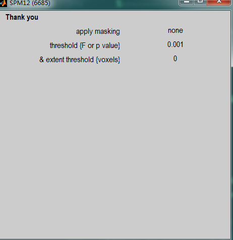

<!DOCTYPE html>
<html lang="zh">
<head><meta name="generator" content="Hexo 3.8.0">
    <meta charset="utf-8">
    
    <title>SPM中函数的修改和使用 | FEI&#39;s Blog</title>
    
    
        <meta name="keywords" content="SPM">
    
    <meta name="viewport" content="width=device-width, initial-scale=1, maximum-scale=1">
    <meta name="description" content="SPM是处理脑成像数据的一个综合性软件，基于matlab实现，里面有大量的函数都可以抽取出来单独使用完成某一个功能。使用其中的函数工作可以大大提高分析处理数据的便捷性，便于实现批量处理和大规模数据处理。">
<meta name="keywords" content="SPM">
<meta property="og:type" content="article">
<meta property="og:title" content="SPM中函数的修改和使用">
<meta property="og:url" content="http://ff120.github.io/hexoblog/2017/04/14/技术/认知神经科学/SPM中函数的修改和使用/index.html">
<meta property="og:site_name" content="FEI&#39;s Blog">
<meta property="og:description" content="SPM是处理脑成像数据的一个综合性软件，基于matlab实现，里面有大量的函数都可以抽取出来单独使用完成某一个功能。使用其中的函数工作可以大大提高分析处理数据的便捷性，便于实现批量处理和大规模数据处理。">
<meta property="og:locale" content="zh-Hans">
<meta property="og:image" content="http://ff120.github.io/hexoblog/2017/04/14/技术/认知神经科学/SPM中函数的修改和使用/2017-04-14_184550.png">
<meta property="og:image" content="http://ff120.github.io/hexoblog/2017/04/14/技术/认知神经科学/SPM中函数的修改和使用/2017-04-14_184633.png">
<meta property="og:image" content="http://ff120.github.io/hexoblog/2017/04/14/技术/认知神经科学/SPM中函数的修改和使用/QQ截图20170414184700.png">
<meta property="og:image" content="http://ff120.github.io/hexoblog/2017/04/14/技术/认知神经科学/SPM中函数的修改和使用/2017-04-14_184737.png">
<meta property="og:image" content="http://ff120.github.io/hexoblog/2017/04/14/技术/认知神经科学/SPM中函数的修改和使用/2017-04-14_185253.png">
<meta property="og:updated_time" content="2019-03-28T00:54:59.577Z">
<meta name="twitter:card" content="summary">
<meta name="twitter:title" content="SPM中函数的修改和使用">
<meta name="twitter:description" content="SPM是处理脑成像数据的一个综合性软件，基于matlab实现，里面有大量的函数都可以抽取出来单独使用完成某一个功能。使用其中的函数工作可以大大提高分析处理数据的便捷性，便于实现批量处理和大规模数据处理。">
<meta name="twitter:image" content="http://ff120.github.io/hexoblog/2017/04/14/技术/认知神经科学/SPM中函数的修改和使用/2017-04-14_184550.png">
    

    
        <link rel="alternate" href="/atom.xml" title="FEI&#39;s Blog" type="application/atom+xml">
    

    
        <link rel="icon" href="/hexoblog/favicon.ico">
    

    <link rel="stylesheet" href="/hexoblog/libs/font-awesome/css/font-awesome.min.css">
    <link rel="stylesheet" href="/hexoblog/libs/open-sans/styles.css">
    <link rel="stylesheet" href="/hexoblog/libs/source-code-pro/styles.css">

    <link rel="stylesheet" href="/hexoblog/css/style.css">
    <script src="/hexoblog/libs/jquery/2.1.3/jquery.min.js"></script>
    <script src="/hexoblog/libs/jquery/plugins/cookie/1.4.1/jquery.cookie.js"></script>
    
    
        <link rel="stylesheet" href="/hexoblog/libs/lightgallery/css/lightgallery.min.css">
    
    
        <link rel="stylesheet" href="/hexoblog/libs/justified-gallery/justifiedGallery.min.css">
    
    
    
    


    
        <script async src="//busuanzi.ibruce.info/busuanzi/2.3/busuanzi.pure.mini.js"></script>
    
</head>
</html>
<body>
    <div id="container">
        <header id="header">
    <div id="header-main" class="header-inner">
        <div class="outer">
            <a href="/hexoblog/" id="logo">
                <i class="logo"></i>
                <span class="site-title">FEI&#39;s Blog</span>
            </a>
            <nav id="main-nav">
                
                    <a class="main-nav-link" href="/hexoblog/">首页</a>
                
                    <a class="main-nav-link" href="/hexoblog/archives">归档</a>
                
                    <a class="main-nav-link" href="/hexoblog/categories">分类</a>
                
                    <a class="main-nav-link" href="/hexoblog/tags">标签</a>
                
                    <a class="main-nav-link" href="/hexoblog/about">关于</a>
                
            </nav>
            
            <div id="search-form-wrap">

    <form class="search-form">
        <input type="text" class="ins-search-input search-form-input" placeholder="Rechercher">
        <button type="submit" class="search-form-submit"></button>
    </form>
    <div class="ins-search">
    <div class="ins-search-mask"></div>
    <div class="ins-search-container">
        <div class="ins-input-wrapper">
            <input type="text" class="ins-search-input" placeholder="Type something...">
            <span class="ins-close ins-selectable"><i class="fa fa-times-circle"></i></span>
        </div>
        <div class="ins-section-wrapper">
            <div class="ins-section-container"></div>
        </div>
    </div>
</div>
<script>
(function (window) {
    var INSIGHT_CONFIG = {
        TRANSLATION: {
            POSTS: 'Articles',
            PAGES: 'Pages',
            CATEGORIES: 'Catégories',
            TAGS: 'Tags',
            UNTITLED: '(Untitled)',
        },
        ROOT_URL: '/hexoblog/',
        CONTENT_URL: '/hexoblog/content.json',
    };
    window.INSIGHT_CONFIG = INSIGHT_CONFIG;
})(window);
</script>
<script src="/hexoblog/js/insight.js"></script>

</div>
        </div>
    </div>
    <div id="main-nav-mobile" class="header-sub header-inner">
        <table class="menu outer">
            <tr>
                
                    <td><a class="main-nav-link" href="/hexoblog/">首页</a></td>
                
                    <td><a class="main-nav-link" href="/hexoblog/archives">归档</a></td>
                
                    <td><a class="main-nav-link" href="/hexoblog/categories">分类</a></td>
                
                    <td><a class="main-nav-link" href="/hexoblog/tags">标签</a></td>
                
                    <td><a class="main-nav-link" href="/hexoblog/about">关于</a></td>
                
                <td>
                    
    <div class="search-form">
        <input type="text" class="ins-search-input search-form-input" placeholder="Rechercher">
    </div>

                </td>
            </tr>
        </table>
    </div>
</header>

        <div class="outer">
            
            
                <aside id="sidebar">
   
        
    <div class="widget-wrap" id="categories">
        <h3 class="widget-title">
            <span>Catégories</span>
            &nbsp;
            <a id="allExpand" href="#">
                <i class="fa fa-angle-double-down fa-2x"></i>
            </a>
        </h3>
        
        
        
         <ul class="unstyled" id="tree"> 
                    <li class="directory">
                        <a href="#" data-role="directory">
                            <i class="fa fa-folder"></i>
                            &nbsp;
                            心理学
                        </a>
                         <ul class="unstyled" id="tree"> 
                    <li class="directory">
                        <a href="#" data-role="directory">
                            <i class="fa fa-folder"></i>
                            &nbsp;
                            记忆魔法
                        </a>
                         <ul class="unstyled" id="tree">  <li class="file"><a href="/hexoblog/2019/04/03/心理学/记忆魔法/代码记忆法/">代码记忆法</a></li>  </ul> 
                    </li> 
                     </ul> 
                    </li> 
                    
                    <li class="directory open">
                        <a href="#" data-role="directory">
                            <i class="fa fa-folder-open"></i>
                            &nbsp;
                            技术
                        </a>
                         <ul class="unstyled" id="tree"> 
                    <li class="directory">
                        <a href="#" data-role="directory">
                            <i class="fa fa-folder"></i>
                            &nbsp;
                            Web开发
                        </a>
                         <ul class="unstyled" id="tree">  <li class="file"><a href="/hexoblog/2016/06/11/技术/Web开发/后台开发_How-to-install-Laravel-framework/">How to install Laravel framework</a></li>  <li class="file"><a href="/hexoblog/2016/06/11/技术/Web开发/后台开发_laravel-4-note-01/">laravel 4 note 01</a></li>  <li class="file"><a href="/hexoblog/2016/06/11/技术/Web开发/后台开发_Make-phpStorm-friendly-to-laravel/">Make phpStorm friendly to laravel</a></li>  <li class="file"><a href="/hexoblog/2016/06/11/技术/Web开发/后台开发_sublime-Text-tricks/">sublime Text tricks</a></li>  <li class="file"><a href="/hexoblog/2016/06/11/技术/Web开发/后台开发_think-php-note-01/">think php note 01</a></li>  <li class="file"><a href="/hexoblog/2016/06/11/技术/Web开发/后台开发_think-php-note-02/">think php note 02</a></li>  <li class="file"><a href="/hexoblog/2016/06/11/技术/Web开发/后台开发_think-php-note-03/">think php note 03</a></li>  <li class="file"><a href="/hexoblog/2016/06/11/技术/Web开发/后台开发_PHP编译less文件-lessphp的使用/">PHP编译less文件-lessphp的使用</a></li>  <li class="file"><a href="/hexoblog/2016/06/11/技术/Web开发/后台开发_Lavarel-后台组件frozenode的使用/">Lavarel 后台组件frozenode的使用</a></li>  <li class="file"><a href="/hexoblog/2016/06/11/技术/Web开发/后台开发_Linux常用命令/">Linux常用命令</a></li>  <li class="file"><a href="/hexoblog/2016/06/11/技术/Web开发/后台开发_Linux主机之间同步文件/">Linux主机之间同步文件</a></li>  <li class="file"><a href="/hexoblog/2016/06/11/技术/Web开发/后台开发_PHP基本操作/">PHP基本操作</a></li>  <li class="file"><a href="/hexoblog/2016/06/11/技术/Web开发/后台开发_短信验证码的实现/">短信验证码的实现</a></li>  <li class="file"><a href="/hexoblog/2016/06/11/技术/Web开发/后台开发_配置Apache支持使用HTTPS/">配置Apache支持使用HTTPS</a></li>  <li class="file"><a href="/hexoblog/2016/06/11/技术/Web开发/测试_使用Selenium测试UI/">测试_使用Selenium测试UI</a></li>  <li class="file"><a href="/hexoblog/2016/06/11/技术/Web开发/后台开发_PhpStorm常用快捷键/">PhpStorm常用快捷键</a></li>  <li class="file"><a href="/hexoblog/2016/06/11/技术/Web开发/微信开发_微信发送消息PHP-SDK/">微信发送消息PHP SDK</a></li>  <li class="file"><a href="/hexoblog/2016/06/11/技术/Web开发/微信开发_获取地理位置/">微信获取地理位置 </a></li>  <li class="file"><a href="/hexoblog/2016/06/11/技术/Web开发/微信开发_发送模板消息的代码/">微信发送模板消息的代码</a></li>  <li class="file"><a href="/hexoblog/2016/06/11/技术/Web开发/测试_Selenium-定位元素的几种方式/">测试_Selenium定位元素的几种方式</a></li>  <li class="file"><a href="/hexoblog/2016/06/11/技术/Web开发/测试_Selenium-Action/">测试_Selenium Action</a></li>  <li class="file"><a href="/hexoblog/2016/06/11/技术/Web开发/测试_Apache-JMeter的使用/">测试_Apache JMeter的使用</a></li>  <li class="file"><a href="/hexoblog/2016/06/12/技术/Web开发/后台开发_Apache-配置虚拟主机/">Apache 配置虚拟主机</a></li>  <li class="file"><a href="/hexoblog/2016/06/23/技术/Web开发/后台开发_改进PHP的var-dump-方法使之适应显示从数据库中查出来的数据/">改进PHP的var_dump()方法使之适应显示从数据库中查出来的数据</a></li>  <li class="file"><a href="/hexoblog/2016/06/23/技术/Web开发/后台开发_PHP读写XLS/">PHP读写XLS</a></li>  <li class="file"><a href="/hexoblog/2016/06/30/技术/Web开发/前端_jQuery-EasyUI-学习笔记/">JQuery EasyUI 学习笔记</a></li>  <li class="file"><a href="/hexoblog/2016/06/30/技术/Web开发/前端_bootsharp学习笔记/">Bootsharp学习笔记</a></li>  </ul> 
                    </li> 
                    
                    <li class="directory">
                        <a href="#" data-role="directory">
                            <i class="fa fa-folder"></i>
                            &nbsp;
                            专业术语
                        </a>
                         <ul class="unstyled" id="tree">  <li class="file"><a href="/hexoblog/2017/07/24/技术/专业术语/术语/">英语</a></li>  </ul> 
                    </li> 
                    
                    <li class="directory">
                        <a href="#" data-role="directory">
                            <i class="fa fa-folder"></i>
                            &nbsp;
                            大数据
                        </a>
                         <ul class="unstyled" id="tree">  <li class="file"><a href="/hexoblog/2016/06/23/技术/大数据/大数据_Spark环境下的Kmeans-Python实现/">Spark环境下的Kmeans-Python实现</a></li>  <li class="file"><a href="/hexoblog/2017/10/06/技术/大数据/大数据基础框架/">大数据基础框架</a></li>  </ul> 
                    </li> 
                    
                    <li class="directory">
                        <a href="#" data-role="directory">
                            <i class="fa fa-folder"></i>
                            &nbsp;
                            工具
                        </a>
                         <ul class="unstyled" id="tree"> 
                    <li class="directory">
                        <a href="#" data-role="directory">
                            <i class="fa fa-folder"></i>
                            &nbsp;
                            AutoHotKey
                        </a>
                         <ul class="unstyled" id="tree">  <li class="file"><a href="/hexoblog/2018/12/02/技术/工具/AutoHotKey/AutoHotKey非常有用的脚本/">AutoHotKey非常有用的脚本</a></li>  </ul> 
                    </li> 
                    
                    <li class="directory">
                        <a href="#" data-role="directory">
                            <i class="fa fa-folder"></i>
                            &nbsp;
                            Git
                        </a>
                         <ul class="unstyled" id="tree">  <li class="file"><a href="/hexoblog/2017/05/04/技术/工具/Git/GIT的使用01-基本功能/">GIT的使用01-基本功能</a></li>  <li class="file"><a href="/hexoblog/2018/07/29/技术/工具/Git/Git查询手册/">Git 手册</a></li>  </ul> 
                    </li> 
                    
                    <li class="directory">
                        <a href="#" data-role="directory">
                            <i class="fa fa-folder"></i>
                            &nbsp;
                            Hexo
                        </a>
                         <ul class="unstyled" id="tree">  <li class="file"><a href="/hexoblog/2016/06/12/技术/工具/Hexo/Hexo的使用02-同步/">Hexo的使用02-同步</a></li>  <li class="file"><a href="/hexoblog/2016/06/13/技术/工具/Hexo/Hexo的使用01-搭建/">Hexo的使用01-搭建</a></li>  <li class="file"><a href="/hexoblog/2017/04/12/技术/工具/Hexo/Hexo的使用05-Atom编辑器/">Hexo的使用05-Atom编辑器</a></li>  <li class="file"><a href="/hexoblog/2017/04/12/技术/工具/Hexo/Hexo的使用04-数学公式/">Hexo的使用04-数学公式</a></li>  <li class="file"><a href="/hexoblog/2017/05/05/技术/工具/Hexo/Hexo的使用03-迁移/">Hexo的使用03-迁移</a></li>  <li class="file"><a href="/hexoblog/2017/07/17/技术/工具/Hexo/Hexo的使用06-使用gist存储代码片段/">Hexo中使用gist存储代码片段</a></li>  </ul> 
                    </li> 
                    
                    <li class="directory">
                        <a href="#" data-role="directory">
                            <i class="fa fa-folder"></i>
                            &nbsp;
                            Visio
                        </a>
                         <ul class="unstyled" id="tree">  <li class="file"><a href="/hexoblog/2017/05/05/技术/工具/Visio/VISIO的使用01-基础入门/">VISIO的使用01-基础入门</a></li>  </ul> 
                    </li> 
                    
                    <li class="directory">
                        <a href="#" data-role="directory">
                            <i class="fa fa-folder"></i>
                            &nbsp;
                            图片处理
                        </a>
                         <ul class="unstyled" id="tree">  <li class="file"><a href="/hexoblog/2017/05/05/技术/工具/图片处理/图片处理02-一寸照片/">图片处理02-一寸照片</a></li>  <li class="file"><a href="/hexoblog/2017/05/17/技术/工具/图片处理/图片处理01-合并多张图片/">图片处理01-合并多张图片</a></li>  </ul> 
                    </li> 
                    
                    <li class="directory">
                        <a href="#" data-role="directory">
                            <i class="fa fa-folder"></i>
                            &nbsp;
                            正则表达式
                        </a>
                         <ul class="unstyled" id="tree">  <li class="file"><a href="/hexoblog/2018/07/29/技术/工具/正则表达式/正则表达式/">正则表达式</a></li>  </ul> 
                    </li> 
                    
                    <li class="directory">
                        <a href="#" data-role="directory">
                            <i class="fa fa-folder"></i>
                            &nbsp;
                            编程IDE
                        </a>
                         <ul class="unstyled" id="tree"> 
                    <li class="directory">
                        <a href="#" data-role="directory">
                            <i class="fa fa-folder"></i>
                            &nbsp;
                            Anaconda
                        </a>
                         <ul class="unstyled" id="tree">  <li class="file"><a href="/hexoblog/2017/04/18/技术/工具/编程IDE/Anaconda/Anaconda的使用01-基础/">Anaconda的使用01-基础</a></li>  </ul> 
                    </li> 
                    
                    <li class="directory">
                        <a href="#" data-role="directory">
                            <i class="fa fa-folder"></i>
                            &nbsp;
                            JetBrainsCLion
                        </a>
                         <ul class="unstyled" id="tree">  <li class="file"><a href="/hexoblog/2017/05/04/技术/工具/编程IDE/JetBrainsCLion/JetBrainsCLion的使用01-入门/">JetBrainsCLion的使用01-入门</a></li>  </ul> 
                    </li> 
                    
                    <li class="directory">
                        <a href="#" data-role="directory">
                            <i class="fa fa-folder"></i>
                            &nbsp;
                            VSCode
                        </a>
                         <ul class="unstyled" id="tree">  <li class="file"><a href="/hexoblog/2017/07/24/技术/工具/编程IDE/VSCode/Visual-Studio-Code使用技巧/">Visual Studio Code使用技巧</a></li>  </ul> 
                    </li> 
                     </ul> 
                    </li> 
                    
                    <li class="directory">
                        <a href="#" data-role="directory">
                            <i class="fa fa-folder"></i>
                            &nbsp;
                            网络软件
                        </a>
                         <ul class="unstyled" id="tree">  <li class="file"><a href="/hexoblog/2016/06/12/技术/工具/网络软件/Windows全局代理软件Proxifier/">Windows全局代理软件Proxifier</a></li>  <li class="file"><a href="/hexoblog/2016/06/12/技术/工具/网络软件/Windows手工修改路由表/">Windows手工修改路由表</a></li>  </ul> 
                    </li> 
                     </ul> 
                    </li> 
                    
                    <li class="directory">
                        <a href="#" data-role="directory">
                            <i class="fa fa-folder"></i>
                            &nbsp;
                            数据库
                        </a>
                         <ul class="unstyled" id="tree">  <li class="file"><a href="/hexoblog/2016/06/11/技术/数据库/数据库_Redis入门/">Redis入门</a></li>  <li class="file"><a href="/hexoblog/2016/06/12/技术/数据库/数据库_使用Database-Configuration-Assist-工具创建oracle数据库/">使用Database Configuration Assist 工具创建oracle数据库</a></li>  <li class="file"><a href="/hexoblog/2017/11/02/技术/数据库/SQL/">SQL</a></li>  </ul> 
                    </li> 
                    
                    <li class="directory">
                        <a href="#" data-role="directory">
                            <i class="fa fa-folder"></i>
                            &nbsp;
                            数据结构和算法
                        </a>
                         <ul class="unstyled" id="tree">  <li class="file"><a href="/hexoblog/2017/03/21/技术/数据结构和算法/算法专题_二维数组/">算法专题_二维数组</a></li>  <li class="file"><a href="/hexoblog/2017/03/21/技术/数据结构和算法/算法专题_矩阵和图/">矩阵和用矩阵表示的图的相关问题</a></li>  <li class="file"><a href="/hexoblog/2017/03/21/技术/数据结构和算法/算法专题_位运算/">算法专题_位运算</a></li>  <li class="file"><a href="/hexoblog/2017/03/23/技术/数据结构和算法/算法专题_链表/">算法专题_链表</a></li>  <li class="file"><a href="/hexoblog/2017/04/05/技术/数据结构和算法/算法专题_动态规划/">算法专题_动态规划</a></li>  <li class="file"><a href="/hexoblog/2017/04/06/技术/数据结构和算法/算法专题_图/">算法专题_图问题</a></li>  <li class="file"><a href="/hexoblog/2017/04/08/技术/数据结构和算法/做过的算法题汇总表/">做过的算法题汇总表</a></li>  <li class="file"><a href="/hexoblog/2017/04/09/技术/数据结构和算法/算法专题_二叉树/">算法专题_二叉树</a></li>  <li class="file"><a href="/hexoblog/2017/04/09/技术/数据结构和算法/算法专题_通用树结构/">算法专题_通用树结构</a></li>  <li class="file"><a href="/hexoblog/2017/04/10/技术/数据结构和算法/算法专题_大数据和空间限制/">算法专题_大数据和空间限制</a></li>  <li class="file"><a href="/hexoblog/2017/04/10/技术/数据结构和算法/算法专题_排列组合/">算法专题_排列组合</a></li>  <li class="file"><a href="/hexoblog/2017/04/11/技术/数据结构和算法/本地代码集锦/">本地代码集锦</a></li>  <li class="file"><a href="/hexoblog/2017/04/12/技术/数据结构和算法/算法专题_栈和队列/">算法专题_栈和队列</a></li>  <li class="file"><a href="/hexoblog/2017/04/16/技术/数据结构和算法/算法专题_排序算法/">算法专题_排序算法</a></li>  <li class="file"><a href="/hexoblog/2017/04/17/技术/数据结构和算法/算法专题_算法总结/">算法专题_算法总结</a></li>  <li class="file"><a href="/hexoblog/2017/05/02/技术/数据结构和算法/算法专题_一维数组/">算法专题_一维数组</a></li>  <li class="file"><a href="/hexoblog/2017/05/05/技术/数据结构和算法/算法专题_图之网络流/">算法专题_图之网络流</a></li>  <li class="file"><a href="/hexoblog/2017/05/06/技术/数据结构和算法/算法专题_图之最短路径/">算法专题_图之最短路径</a></li>  <li class="file"><a href="/hexoblog/2017/05/06/技术/数据结构和算法/算法专题_最小生成树/">算法专题_最小生成树</a></li>  <li class="file"><a href="/hexoblog/2017/05/06/技术/数据结构和算法/算法专题_霍夫曼编码/">算法专题_霍夫曼编码(哈夫曼编码)</a></li>  <li class="file"><a href="/hexoblog/2017/05/07/技术/数据结构和算法/Kickstart-Round-B-2017/">Kickstart Round B 2017</a></li>  <li class="file"><a href="/hexoblog/2017/05/08/技术/数据结构和算法/算法专题_模运算/">算法专题_模运算</a></li>  <li class="file"><a href="/hexoblog/2017/05/09/技术/数据结构和算法/算法专题_素数问题/">算法专题_素数问题</a></li>  <li class="file"><a href="/hexoblog/2017/05/11/技术/数据结构和算法/算法专题_计算几何/">算法专题_计算几何</a></li>  <li class="file"><a href="/hexoblog/2017/05/27/技术/数据结构和算法/计蒜之道2017程序设计大赛/">计蒜之道2017程序设计大赛</a></li>  <li class="file"><a href="/hexoblog/2017/05/28/技术/数据结构和算法/算法专题_字符串匹配/">算法专题_字符串匹配</a></li>  <li class="file"><a href="/hexoblog/2017/07/12/技术/数据结构和算法/四等分数组/">四等分数组</a></li>  <li class="file"><a href="/hexoblog/2017/07/12/技术/数据结构和算法/矩阵的遍历/">矩阵的遍历</a></li>  <li class="file"><a href="/hexoblog/2017/07/20/技术/数据结构和算法/N皇后问题/">N皇后问题</a></li>  <li class="file"><a href="/hexoblog/2017/07/23/技术/数据结构和算法/算法专题_线段树/">算法专题_线段树</a></li>  <li class="file"><a href="/hexoblog/2017/07/23/技术/数据结构和算法/算法专题_树状数组/">算法专题_树状数组</a></li>  <li class="file"><a href="/hexoblog/2017/07/23/技术/数据结构和算法/算法专题_并查集/">算法专题_并查集</a></li>  <li class="file"><a href="/hexoblog/2017/07/26/技术/数据结构和算法/算法专题_链表2/">算法专题_链表2</a></li>  <li class="file"><a href="/hexoblog/2017/08/06/技术/数据结构和算法/算法专题_二叉堆/">算法专题_二叉堆</a></li>  <li class="file"><a href="/hexoblog/2017/08/07/技术/数据结构和算法/算法专题_快速排序/">算法专题_快速排序</a></li>  <li class="file"><a href="/hexoblog/2017/08/07/技术/数据结构和算法/算法专题_归并排序/">算法专题_归并排序</a></li>  <li class="file"><a href="/hexoblog/2017/08/13/技术/数据结构和算法/算法专题-hihocoder/">算法专题_hihocoder</a></li>  <li class="file"><a href="/hexoblog/2017/08/17/技术/数据结构和算法/算法专题-贪心法/">算法专题_贪心法</a></li>  <li class="file"><a href="/hexoblog/2017/08/18/技术/数据结构和算法/阿里在线测评-兔子繁殖问题/">阿里笔试</a></li>  <li class="file"><a href="/hexoblog/2017/08/22/技术/数据结构和算法/今日头条-在线编程题/">今日头条_在线编程题</a></li>  <li class="file"><a href="/hexoblog/2017/08/23/技术/数据结构和算法/算法专题-字典树-Trie树/">算法专题_字典树(Trie树)</a></li>  <li class="file"><a href="/hexoblog/2017/09/23/技术/数据结构和算法/算法专题_二叉树2/">算法专题_二叉树2</a></li>  <li class="file"><a href="/hexoblog/2017/09/27/技术/数据结构和算法/手写代码-其他/">手写代码-其他</a></li>  <li class="file"><a href="/hexoblog/2017/10/03/技术/数据结构和算法/算法专题-常见题目/">算法专题_常见题目</a></li>  </ul> 
                    </li> 
                    
                    <li class="directory">
                        <a href="#" data-role="directory">
                            <i class="fa fa-folder"></i>
                            &nbsp;
                            机器学习
                        </a>
                         <ul class="unstyled" id="tree"> 
                    <li class="directory">
                        <a href="#" data-role="directory">
                            <i class="fa fa-folder"></i>
                            &nbsp;
                            深度学习
                        </a>
                         <ul class="unstyled" id="tree">  <li class="file"><a href="/hexoblog/2017/03/22/技术/机器学习/深度学习/深度学习_Theano使用技巧/">深度学习_Theano使用技巧</a></li>  <li class="file"><a href="/hexoblog/2017/04/18/技术/机器学习/深度学习/深度学习_基本概念/">深度学习_基本概念</a></li>  <li class="file"><a href="/hexoblog/2017/04/18/技术/机器学习/深度学习/深度学习_利用神经网络识别手写数字/">深度学习__利用神经网络识别手写数字</a></li>  <li class="file"><a href="/hexoblog/2017/04/19/技术/机器学习/深度学习/深度学习_反向传播算法及简单实例/">深度学习_反向传播算法及简单实例</a></li>  <li class="file"><a href="/hexoblog/2017/04/19/技术/机器学习/深度学习/深度学习_Keras使用技巧/">深度学习_Keras使用技巧</a></li>  <li class="file"><a href="/hexoblog/2017/04/20/技术/机器学习/深度学习/深度学习_使用keras实现autoencoder/">深度学习_使用keras实现autoencoder</a></li>  <li class="file"><a href="/hexoblog/2017/04/20/技术/机器学习/深度学习/深度学习_卷积神经网络/">深度学习_卷积神经网络</a></li>  <li class="file"><a href="/hexoblog/2017/04/27/技术/机器学习/深度学习/深度学习_使用autoencoder自动提取特征/">深度学习_使用autoencoder自动提取特征</a></li>  <li class="file"><a href="/hexoblog/2017/05/10/技术/机器学习/深度学习/深度学习_递归神经网络(RNN)/">深度学习_递归神经网络(RNN)</a></li>  <li class="file"><a href="/hexoblog/2017/05/10/技术/机器学习/深度学习/深度学习_限制波尔茨曼向量机(RBM)/">深度学习_限制波尔茨曼向量机(RBM)</a></li>  <li class="file"><a href="/hexoblog/2017/05/12/技术/机器学习/深度学习/深度学习_TensorFlow使用技巧/">深度学习_TensorFlow使用技巧</a></li>  </ul> 
                    </li> 
                     <li class="file"><a href="/hexoblog/2016/06/16/技术/机器学习/机器学习_Scikit-Learn-ManyClassifier/">同时使用多个分类器(Scikit-Learn)</a></li>  <li class="file"><a href="/hexoblog/2016/06/16/技术/机器学习/机器学习_范数/">机器学习_范数</a></li>  <li class="file"><a href="/hexoblog/2016/06/20/技术/机器学习/机器学习_学习路线/">机器学习_学习路线</a></li>  <li class="file"><a href="/hexoblog/2016/06/20/技术/机器学习/机器学习_手写数字识别/">机器学习_手写数字识别</a></li>  <li class="file"><a href="/hexoblog/2016/07/11/技术/机器学习/机器学习_Matplolib使用技巧/">机器学习_Matplolib使用技巧</a></li>  <li class="file"><a href="/hexoblog/2017/03/22/技术/机器学习/机器学习_人脸识别/">机器学习_人脸识别</a></li>  <li class="file"><a href="/hexoblog/2017/05/04/技术/机器学习/机器学习_Matlab使用技巧/">机器学习_Matlab使用技巧</a></li>  <li class="file"><a href="/hexoblog/2017/05/11/技术/机器学习/机器学习_时间序列预测分析算法/">机器学习_时间序列预测分析算法</a></li>  <li class="file"><a href="/hexoblog/2017/05/14/技术/机器学习/机器学习_Scikit-Learn使用技巧/">深度学习_Scikit-Learn机器学习算法的使用</a></li>  <li class="file"><a href="/hexoblog/2017/05/15/技术/机器学习/机器学习_时间序列预测の广告效果预测/">机器学习_时间序列预测の广告效果预测</a></li>  <li class="file"><a href="/hexoblog/2017/05/15/技术/机器学习/机器学习_算法汇总/">机器学习_算法汇总</a></li>  <li class="file"><a href="/hexoblog/2017/05/17/技术/机器学习/机器学习_Pandas使用技巧/">深度学习_Pandas使用技巧</a></li>  <li class="file"><a href="/hexoblog/2017/05/19/技术/机器学习/机器学习_感知机/">机器学习_感知机</a></li>  <li class="file"><a href="/hexoblog/2017/05/19/技术/机器学习/机器学习_逻辑回归/">机器学习_逻辑回归</a></li>  <li class="file"><a href="/hexoblog/2017/05/22/技术/机器学习/机器学习_损失函数/">机器学习_损失函数</a></li>  <li class="file"><a href="/hexoblog/2017/06/03/技术/机器学习/机器学习_分类器性能的度量/">机器学习_分类器性能的度量</a></li>  <li class="file"><a href="/hexoblog/2017/06/15/技术/机器学习/机器学习_Scipy使用技巧/">机器学习_Scipy使用技巧</a></li>  <li class="file"><a href="/hexoblog/2017/06/15/技术/机器学习/机器学习_Python使用技巧/">深度学习_Python使用技巧</a></li>  <li class="file"><a href="/hexoblog/2017/07/23/技术/机器学习/机器学习-Numpy使用技巧/">机器学习_Numpy使用技巧</a></li>  <li class="file"><a href="/hexoblog/2017/10/15/技术/机器学习/KNN-with-C/">KNN with C++</a></li>  <li class="file"><a href="/hexoblog/2017/11/04/技术/机器学习/机器学习-绪论-基本概念/">机器学习-绪论-基本概念</a></li>  <li class="file"><a href="/hexoblog/2017/11/04/技术/机器学习/机器学习-第一章-逻辑回归/">机器学习-第一章-逻辑回归</a></li>  <li class="file"><a href="/hexoblog/2017/11/04/技术/机器学习/机器学习-第二章-决策树/">机器学习-第二章-决策树</a></li>  <li class="file"><a href="/hexoblog/2017/11/04/技术/机器学习/机器学习-第三章-朴素贝叶斯/">机器学习-第三章-朴素贝叶斯</a></li>  <li class="file"><a href="/hexoblog/2017/11/04/技术/机器学习/机器学习-第四章-支持向量机/">机器学习-第四章-支持向量机</a></li>  <li class="file"><a href="/hexoblog/2017/11/04/技术/机器学习/机器学习-第五章-最近邻/">机器学习-第五章-最近邻</a></li>  <li class="file"><a href="/hexoblog/2017/11/04/技术/机器学习/机器学习-第六章-kmeans/">机器学习-第六章-kmeans</a></li>  <li class="file"><a href="/hexoblog/2017/11/04/技术/机器学习/机器学习-第七章-感知机/">机器学习-第七章-感知机</a></li>  </ul> 
                    </li> 
                    
                    <li class="directory">
                        <a href="#" data-role="directory">
                            <i class="fa fa-folder"></i>
                            &nbsp;
                            编程语言
                        </a>
                         <ul class="unstyled" id="tree"> 
                    <li class="directory">
                        <a href="#" data-role="directory">
                            <i class="fa fa-folder"></i>
                            &nbsp;
                            C++
                        </a>
                         <ul class="unstyled" id="tree">  <li class="file"><a href="/hexoblog/2017/04/07/技术/编程语言/C++/C++语言技巧/">C++语言技巧</a></li>  </ul> 
                    </li> 
                     </ul> 
                    </li> 
                    
                    <li class="directory">
                        <a href="#" data-role="directory">
                            <i class="fa fa-folder"></i>
                            &nbsp;
                            计算机基础
                        </a>
                         <ul class="unstyled" id="tree"> 
                    <li class="directory">
                        <a href="#" data-role="directory">
                            <i class="fa fa-folder"></i>
                            &nbsp;
                            计算机网络
                        </a>
                         <ul class="unstyled" id="tree">  <li class="file"><a href="/hexoblog/2016/06/12/技术/计算机基础/计算机网络/网络_校园网多终端上网方案/">校园网多终端上网方案</a></li>  <li class="file"><a href="/hexoblog/2017/07/12/技术/计算机基础/计算机网络/计算机网络/">计算机网络</a></li>  </ul> 
                    </li> 
                     </ul> 
                    </li> 
                    
                    <li class="directory open">
                        <a href="#" data-role="directory">
                            <i class="fa fa-folder-open"></i>
                            &nbsp;
                            认知神经科学
                        </a>
                         <ul class="unstyled" id="tree">  <li class="file"><a href="/hexoblog/2016/06/12/技术/认知神经科学/文献检索方法/">文献检索方法</a></li>  <li class="file"><a href="/hexoblog/2016/06/12/技术/认知神经科学/参考文献书写格式/">参考文献书写格式</a></li>  <li class="file"><a href="/hexoblog/2016/06/12/技术/认知神经科学/使用Python处理fMRI数据/">使用Python处理fMRI数据</a></li>  <li class="file"><a href="/hexoblog/2016/06/22/技术/认知神经科学/中英文对照/">中英文对照</a></li>  <li class="file"><a href="/hexoblog/2017/01/03/技术/认知神经科学/circos入门教程/">circos入门教程</a></li>  <li class="file"><a href="/hexoblog/2017/03/08/技术/认知神经科学/基于视频的车牌识别和流量统计/">基于视频的车牌识别和流量统计</a></li>  <li class="file"><a href="/hexoblog/2017/03/08/技术/认知神经科学/基于贝叶斯网络和隐性知识的AU识别研究/">基于贝叶斯网络和隐性知识的AU识别研究</a></li>  <li class="file"><a href="/hexoblog/2017/03/09/技术/认知神经科学/基于连接的脑信息解码研究/">基于连接信息的脑信息解码研究</a></li>  <li class="file"><a href="/hexoblog/2017/03/09/技术/认知神经科学/认知神经科学系列目录/">认知神经科学系列目录</a></li>  <li class="file"><a href="/hexoblog/2017/03/20/技术/认知神经科学/多被试多RUN批量预处理(SPM)/">多被试多RUN批量预处理(SPM)</a></li>  <li class="file"><a href="/hexoblog/2017/03/20/技术/认知神经科学/SPM预处理中的常用操作/">SPM预处理中的常用操作</a></li>  <li class="file"><a href="/hexoblog/2017/03/20/技术/认知神经科学/动态因果模型(DCM)的批量定义和估计/">动态因果模型(DCM)的批量定义和估计</a></li>  <li class="file"><a href="/hexoblog/2017/04/13/技术/认知神经科学/使用SPM做Second-Level分析/">使用SPM做Second_Level分析</a></li>  <li class="file"><a href="/hexoblog/2017/04/13/技术/认知神经科学/DCM模型的定义和估计/">DCM模型的定义和估计</a></li>  <li class="file"><a href="/hexoblog/2017/04/14/技术/认知神经科学/XJVIEW的使用技巧/">XJVIEW的使用技巧</a></li>  <li class="file active"><a href="/hexoblog/2017/04/14/技术/认知神经科学/SPM中函数的修改和使用/">SPM中函数的修改和使用</a></li>  <li class="file"><a href="/hexoblog/2017/05/02/技术/认知神经科学/fMRI中常用的工具包/">fMRI中常用的工具包</a></li>  <li class="file"><a href="/hexoblog/2017/05/11/技术/认知神经科学/使用3D卷积神经神经网络提取脑成像数据的特征/">使用3D卷积神经神经网络提取脑成像数据的特征</a></li>  <li class="file"><a href="/hexoblog/2017/05/14/技术/认知神经科学/fMRI相关的资源汇总/">fMRI相关的资源汇总</a></li>  <li class="file"><a href="/hexoblog/2017/05/30/技术/认知神经科学/fMRI相关问题汇总/">fMRI相关问题汇总</a></li>  </ul> 
                    </li> 
                     </ul> 
                    </li> 
                    
                    <li class="directory">
                        <a href="#" data-role="directory">
                            <i class="fa fa-folder"></i>
                            &nbsp;
                            收藏夹
                        </a>
                         <ul class="unstyled" id="tree">  <li class="file"><a href="/hexoblog/2017/03/22/收藏夹/博客集锦/">博客收藏</a></li>  </ul> 
                    </li> 
                     </ul> 
    </div>
    <script>
        $(document).ready(function() {
            var iconFolderOpenClass  = 'fa-folder-open';
            var iconFolderCloseClass = 'fa-folder';
            var iconAllExpandClass = 'fa-angle-double-down';
            var iconAllPackClass = 'fa-angle-double-up';
            // Handle directory-tree expansion:
            // 左键单独展开目录
            $(document).on('click', '#categories a[data-role="directory"]', function (event) {
                event.preventDefault();

                var icon = $(this).children('.fa');
                var expanded = icon.hasClass(iconFolderOpenClass);
                var subtree = $(this).siblings('ul');
                icon.removeClass(iconFolderOpenClass).removeClass(iconFolderCloseClass);
                if (expanded) {
                    if (typeof subtree != 'undefined') {
                        subtree.slideUp({ duration: 100 });
                    }
                    icon.addClass(iconFolderCloseClass);
                } else {
                    if (typeof subtree != 'undefined') {
                        subtree.slideDown({ duration: 100 });
                    }
                    icon.addClass(iconFolderOpenClass);
                }
            });
            // 右键展开下属所有目录
            $('#categories a[data-role="directory"]').bind("contextmenu", function(event){
                event.preventDefault();
                
                var icon = $(this).children('.fa');
                var expanded = icon.hasClass(iconFolderOpenClass);
                var listNode = $(this).siblings('ul');
                var subtrees = $.merge(listNode.find('li ul'), listNode);
                var icons = $.merge(listNode.find('.fa'), icon);
                icons.removeClass(iconFolderOpenClass).removeClass(iconFolderCloseClass);
                if(expanded) {
                    subtrees.slideUp({ duration: 100 });
                    icons.addClass(iconFolderCloseClass);
                } else {
                    subtrees.slideDown({ duration: 100 });
                    icons.addClass(iconFolderOpenClass);
                }
            })
            // 展开关闭所有目录按钮
            $(document).on('click', '#allExpand', function (event) {
                event.preventDefault();
                
                var icon = $(this).children('.fa');
                var expanded = icon.hasClass(iconAllExpandClass);
                icon.removeClass(iconAllExpandClass).removeClass(iconAllPackClass);
                if(expanded) {
                    $('#sidebar .fa.fa-folder').removeClass('fa-folder').addClass('fa-folder-open')
                    $('#categories li ul').slideDown({ duration: 100 });
                    icon.addClass(iconAllPackClass);
                } else {
                    $('#sidebar .fa.fa-folder-open').removeClass('fa-folder-open').addClass('fa-folder')
                    $('#categories li ul').slideUp({ duration: 100 });
                    icon.addClass(iconAllExpandClass);
                }
            });  
        });
    </script>

    
    <div id="toTop" class="fa fa-angle-up"></div>
</aside>
            
            <section id="main"><article id="post-技术/认知神经科学/SPM中函数的修改和使用" class="article article-type-post" itemscope="" itemprop="blogPost">
    <div class="article-inner">
        
        
            <header class="article-header">
                
                    <div class="article-meta">
                        
    <div class="article-category">
    	<i class="fa fa-folder"></i>
        <a class="article-category-link" href="/hexoblog/categories/技术/">技术</a><i class="fa fa-angle-right"></i><a class="article-category-link" href="/hexoblog/categories/技术/认知神经科学/">认知神经科学</a>
    </div>

                        
    <div class="article-tag">
        <i class="fa fa-tag"></i>
        <a class="tag-link" href="/hexoblog/tags/SPM/">SPM</a>
    </div>

                        
    <div class="article-date">
        <i class="fa fa-calendar"></i>
        <a href="/hexoblog/2017/04/14/技术/认知神经科学/SPM中函数的修改和使用/">
            <time datetime="2017-04-14T02:52:58.000Z" itemprop="datePublished">2017-04-14</time>
        </a>
    </div>


                        
                            <i class="fa fa-bar-chart"></i>
                            <span id="busuanzi_container_site_pv"><span id="busuanzi_value_page_pv"></span></span>    
                        
                        
                            <div class="article-meta-button">
                                <a href="https://github.com/FF120/hexoblog/raw/master/source/_posts/技术/认知神经科学/SPM中函数的修改和使用.md"> Source </a>
                            </div>
                            <div class="article-meta-button">
                                <a href="https://github.com/FF120/hexoblog/edit/master/source/_posts/技术/认知神经科学/SPM中函数的修改和使用.md"> Edit </a>
                            </div>
                            <div class="article-meta-button">
                                <a href="https://github.com/FF120/hexoblog/commits/master/source/_posts/技术/认知神经科学/SPM中函数的修改和使用.md"> History </a>
                            </div>
                        
                    </div>
                
                
    
        <h1 class="article-title" itemprop="name">
            SPM中函数的修改和使用
        </h1>
    

            </header>
        
        
        <div class="article-entry" itemprop="articleBody">
        
        
            
                <div id="toc" class="toc-article">
                <strong class="toc-title">Catalogue</strong>
                    <ol class="toc"><li class="toc-item toc-level-3"><a class="toc-link" href="#打印spm头信息包括时间和日期以及执行的函数名称"><span class="toc-number">1.</span> <span class="toc-text">打印SPM头信息，包括时间和日期以及执行的函数名称</span></a></li><li class="toc-item toc-level-3"><a class="toc-link" href="#获得文件p的头信息"><span class="toc-number">2.</span> <span class="toc-text">获得文件P的头信息</span></a></li><li class="toc-item toc-level-3"><a class="toc-link" href="#获得图像某个坐标的值"><span class="toc-number">3.</span> <span class="toc-text">获得图像某个坐标的值</span></a></li><li class="toc-item toc-level-3"><a class="toc-link" href="#roi的定义"><span class="toc-number">4.</span> <span class="toc-text">ROI的定义</span></a></li><li class="toc-item toc-level-3"><a class="toc-link" href="#根据spm.mat获得spmxspm等结构数据"><span class="toc-number">5.</span> <span class="toc-text">根据SPM.mat获得SPM，xSPM等结构数据</span></a></li><li class="toc-item toc-level-3"><a class="toc-link" href="#spm中result面板中对应的函数"><span class="toc-number">6.</span> <span class="toc-text">SPM中Result面板中对应的函数</span></a></li><li class="toc-item toc-level-3"><a class="toc-link" href="#抽取时间序列函数"><span class="toc-number">7.</span> <span class="toc-text">抽取时间序列函数</span></a></li></ol>
                </div>
            
        
        
            <p>SPM是处理脑成像数据的一个综合性软件，基于matlab实现，里面有大量的函数都可以抽取出来单独使用完成某一个功能。使用其中的函数工作可以大大提高分析处理数据的便捷性，便于实现批量处理和大规模数据处理。 <a id="more"></a> ### 获得窗口的句柄保存下窗口正在显示的图像 <figure class="highlight matlab"><table><tr><td class="gutter"><pre><span class="line">1</span><br><span class="line">2</span><br><span class="line">3</span><br></pre></td><td class="code"><pre><span class="line">Fgraph = spm_figure(<span class="string">'GetWin'</span>,<span class="string">'Graphics'</span>);</span><br><span class="line">h1 = <span class="built_in">figure</span>(Fgraph);</span><br><span class="line">print(h1,Input_VOINames,<span class="string">'-dpng'</span>);<span class="comment">% 打印出PNG图片，还可以输出其他的格式，参考Matlab的print函数。</span></span><br></pre></td></tr></table></figure></p>
<h3 id="打印spm头信息包括时间和日期以及执行的函数名称">打印SPM头信息，包括时间和日期以及执行的函数名称</h3>
<figure class="highlight matlab"><table><tr><td class="gutter"><pre><span class="line">1</span><br><span class="line">2</span><br><span class="line">3</span><br></pre></td><td class="code"><pre><span class="line">spm(<span class="string">'FnBanner'</span>,mfilename,SVNid);</span><br><span class="line"><span class="comment">% SPM8: spm_imcalc_extend (v3691)                    22:17:00 - 16/11/2016</span></span><br><span class="line"><span class="comment">% ========================================================================</span></span><br></pre></td></tr></table></figure>
<h3 id="获得文件p的头信息">获得文件P的头信息</h3>
<figure class="highlight matlab"><table><tr><td class="gutter"><pre><span class="line">1</span><br><span class="line">2</span><br><span class="line">3</span><br></pre></td><td class="code"><pre><span class="line">P = &#123;<span class="string">'D:\FMRI_ROOT\YANTAI\ANALYSIS\pre_processing\20160911002\ep2d_bold_moco_p2_rest_0006\af20160911002-182750-00006-00006-1.img'</span>,</span><br><span class="line">    <span class="string">'D:\FMRI_ROOT\YANTAI\ANALYSIS\pre_processing\20160911002\ep2d_bold_moco_p2_rest_0006\af20160911002-182750-00006-00006-1.img'</span>&#125;;</span><br><span class="line">header = spm_vol(P);</span><br></pre></td></tr></table></figure>
<h3 id="获得图像某个坐标的值">获得图像某个坐标的值</h3>
<figure class="highlight matlab"><table><tr><td class="gutter"><pre><span class="line">1</span><br><span class="line">2</span><br><span class="line">3</span><br></pre></td><td class="code"><pre><span class="line">V = &#123;<span class="string">'D:\FMRI_ROOT\YANTAI\ANALYSIS\first_level\20160911002\beta_0001.img'</span>&#125;;</span><br><span class="line">XYZ = [<span class="number">13</span>;<span class="number">48</span>;<span class="number">2</span>];</span><br><span class="line">Y = spm_get_data(V,XYZ);</span><br></pre></td></tr></table></figure>
<h3 id="roi的定义">ROI的定义</h3>
<p>SPM中Region of Interest(ROI)的定义使用的是函数<code>spm_ROI.m</code>,在SPM工具包中查找该名称即可找到它。 SPM中的函数默认都是通过交互的方式获得需要的参数的，类似这样的形式，<code>spm_input('VOI definition...','!+1','b',def,[],1);</code>，当我们需要批量处理的时候，只需要找到相关的参数，注释掉<code>spm_input...</code>，以传入参数替代即可。例如，假如我们想要修改<code>spm_ROI.m</code>使它能够根据输入的MNI坐标定义一个球形的ROI,可以这样修改： 1. 找到下面这段代码： <figure class="highlight matlab"><table><tr><td class="gutter"><pre><span class="line">1</span><br><span class="line">2</span><br><span class="line">3</span><br><span class="line">4</span><br><span class="line">5</span><br><span class="line">6</span><br><span class="line">7</span><br><span class="line">8</span><br><span class="line">9</span><br><span class="line">10</span><br><span class="line">11</span><br><span class="line">12</span><br><span class="line">13</span><br><span class="line">14</span><br><span class="line">15</span><br><span class="line">16</span><br><span class="line">17</span><br></pre></td><td class="code"><pre><span class="line"><span class="keyword">if</span> ~isfield(xY,<span class="string">'def'</span>)</span><br><span class="line">    def        = &#123;<span class="string">'sphere'</span>,<span class="string">'box'</span>,<span class="string">'cluster'</span>,<span class="string">'mask'</span>&#125;;</span><br><span class="line">    <span class="keyword">if</span> isfield(xY,<span class="string">'rej'</span>)</span><br><span class="line">        <span class="keyword">if</span> ~isfield(xY,<span class="string">'M'</span>)</span><br><span class="line">            xY.rej = &#123;xY.rej&#123;:&#125; <span class="string">'cluster'</span>&#125;;</span><br><span class="line">        <span class="keyword">end</span></span><br><span class="line">    <span class="keyword">else</span></span><br><span class="line">        <span class="keyword">if</span> isfield(xY,<span class="string">'M'</span>)</span><br><span class="line">            xY.rej = &#123;&#125;;</span><br><span class="line">        <span class="keyword">else</span></span><br><span class="line">            xY.rej = &#123;<span class="string">'cluster'</span>&#125;;</span><br><span class="line">        <span class="keyword">end</span></span><br><span class="line">    <span class="keyword">end</span></span><br><span class="line">    [q, <span class="built_in">i</span>] = setdiff(def,xY.rej);</span><br><span class="line">    def    = def(<span class="built_in">sort</span>(<span class="built_in">i</span>));</span><br><span class="line">    xY.def = spm_input(<span class="string">'VOI definition...'</span>,<span class="string">'!+1'</span>,<span class="string">'b'</span>,def,[],<span class="number">1</span>);</span><br><span class="line"><span class="keyword">end</span></span><br></pre></td></tr></table></figure></p>
<p>其中最后一条语句<code>xY.def = spm_input('VOI definition...','!+1','b',def,[],1);</code>是定义需要什么类型的ROI的，原来的代码里面需要用户输入，这里我们把这句话注视掉，用<code>xY.def = input_xyz;</code>代替；这里需要注意的是，input_xyz是3行1列的列向量，表示MNI坐标。当不知道数据的格式的时候，最好在matlab命令窗口执行修改之前的<code>spm_input()</code>,查看返回的是什么类型的数据。 2. 然后找到下面的代码： <figure class="highlight matlab"><table><tr><td class="gutter"><pre><span class="line">1</span><br><span class="line">2</span><br><span class="line">3</span><br><span class="line">4</span><br><span class="line">5</span><br><span class="line">6</span><br><span class="line">7</span><br><span class="line">8</span><br><span class="line">9</span><br><span class="line">10</span><br></pre></td><td class="code"><pre><span class="line"><span class="keyword">case</span> <span class="string">'sphere'</span></span><br><span class="line">   <span class="comment">%----------------------------------------------------------------------</span></span><br><span class="line">   <span class="keyword">if</span> ~isfield(xY,<span class="string">'xyz'</span>) || <span class="built_in">isempty</span>(xY.xyz)</span><br><span class="line">       xY.xyz = spm_input(<span class="string">'sphere centre [x y z] &#123;mm&#125;'</span>,...</span><br><span class="line">           <span class="string">'!+0'</span>,<span class="string">'r'</span>,<span class="string">'0 0 0'</span>,<span class="number">3</span>);</span><br><span class="line">   <span class="keyword">end</span></span><br><span class="line">   <span class="keyword">if</span> ~isfield(xY,<span class="string">'spec'</span>)</span><br><span class="line">       xY.spec = spm_input(<span class="string">'sphere radius (mm)'</span>,<span class="string">'!+0'</span>,<span class="string">'r'</span>,<span class="number">0</span>,<span class="number">1</span>,[<span class="number">0</span>,Inf]);</span><br><span class="line">   <span class="keyword">end</span></span><br><span class="line">   xY.str = sprintf(<span class="string">'%0.1fmm sphere'</span>,xY.spec);</span><br></pre></td></tr></table></figure></p>
<p>这段代码是当上面定义了要使用球形的ROI时，球形ROI需要的一些参数。可以揽到，这里也是用交互的方式输入的参数，这里我们修改成传入参数的形式。 <code>xY.xyz = input_xyz;</code> <code>xY.spec = input_radius;</code></p>
<p>该函数原来的调用方式是<code>[xY, XYZmm, j] = spm_ROI(xY, XYZmm)</code>,由于我们新加入了传入参数，所以我们修改原来的函数为下面这样的形式：<code>[xY, XYZmm, j] = spm_ROI_extend(xY, XYZmm,input_def,input_xyz,input_radius)</code>, 最后，最好把新加入的参数的含义写在下面的注释中，这样就可以使用<code>help spm_ROI</code>查看到该函数的使用方法。另外，自己改写的函数最好换一个名字。 一个完整的例子： <figure class="highlight matlab"><table><tr><td class="gutter"><pre><span class="line">1</span><br><span class="line">2</span><br><span class="line">3</span><br><span class="line">4</span><br><span class="line">5</span><br><span class="line">6</span><br><span class="line">7</span><br><span class="line">8</span><br><span class="line">9</span><br><span class="line">10</span><br><span class="line">11</span><br><span class="line">12</span><br><span class="line">13</span><br><span class="line">14</span><br><span class="line">15</span><br><span class="line">16</span><br><span class="line">17</span><br><span class="line">18</span><br><span class="line">19</span><br><span class="line">20</span><br><span class="line">21</span><br><span class="line">22</span><br><span class="line">23</span><br><span class="line">24</span><br><span class="line">25</span><br><span class="line">26</span><br><span class="line">27</span><br><span class="line">28</span><br><span class="line">29</span><br><span class="line">30</span><br><span class="line">31</span><br><span class="line">32</span><br><span class="line">33</span><br><span class="line">34</span><br><span class="line">35</span><br><span class="line">36</span><br><span class="line">37</span><br><span class="line">38</span><br><span class="line">39</span><br><span class="line">40</span><br><span class="line">41</span><br><span class="line">42</span><br><span class="line">43</span><br><span class="line">44</span><br><span class="line">45</span><br><span class="line">46</span><br><span class="line">47</span><br><span class="line">48</span><br><span class="line">49</span><br><span class="line">50</span><br><span class="line">51</span><br><span class="line">52</span><br><span class="line">53</span><br><span class="line">54</span><br><span class="line">55</span><br><span class="line">56</span><br><span class="line">57</span><br><span class="line">58</span><br><span class="line">59</span><br><span class="line">60</span><br><span class="line">61</span><br><span class="line">62</span><br><span class="line">63</span><br><span class="line">64</span><br><span class="line">65</span><br><span class="line">66</span><br><span class="line">67</span><br><span class="line">68</span><br><span class="line">69</span><br><span class="line">70</span><br><span class="line">71</span><br><span class="line">72</span><br><span class="line">73</span><br><span class="line">74</span><br><span class="line">75</span><br><span class="line">76</span><br><span class="line">77</span><br><span class="line">78</span><br><span class="line">79</span><br><span class="line">80</span><br><span class="line">81</span><br><span class="line">82</span><br><span class="line">83</span><br><span class="line">84</span><br><span class="line">85</span><br><span class="line">86</span><br><span class="line">87</span><br><span class="line">88</span><br><span class="line">89</span><br><span class="line">90</span><br><span class="line">91</span><br><span class="line">92</span><br><span class="line">93</span><br><span class="line">94</span><br><span class="line">95</span><br><span class="line">96</span><br><span class="line">97</span><br><span class="line">98</span><br><span class="line">99</span><br><span class="line">100</span><br><span class="line">101</span><br><span class="line">102</span><br><span class="line">103</span><br><span class="line">104</span><br><span class="line">105</span><br><span class="line">106</span><br><span class="line">107</span><br><span class="line">108</span><br><span class="line">109</span><br><span class="line">110</span><br><span class="line">111</span><br><span class="line">112</span><br><span class="line">113</span><br><span class="line">114</span><br><span class="line">115</span><br><span class="line">116</span><br><span class="line">117</span><br><span class="line">118</span><br><span class="line">119</span><br><span class="line">120</span><br><span class="line">121</span><br><span class="line">122</span><br><span class="line">123</span><br><span class="line">124</span><br><span class="line">125</span><br><span class="line">126</span><br><span class="line">127</span><br><span class="line">128</span><br><span class="line">129</span><br><span class="line">130</span><br><span class="line">131</span><br><span class="line">132</span><br><span class="line">133</span><br><span class="line">134</span><br><span class="line">135</span><br><span class="line">136</span><br><span class="line">137</span><br><span class="line">138</span><br><span class="line">139</span><br><span class="line">140</span><br><span class="line">141</span><br><span class="line">142</span><br><span class="line">143</span><br><span class="line">144</span><br><span class="line">145</span><br><span class="line">146</span><br><span class="line">147</span><br><span class="line">148</span><br><span class="line">149</span><br><span class="line">150</span><br><span class="line">151</span><br><span class="line">152</span><br><span class="line">153</span><br><span class="line">154</span><br><span class="line">155</span><br><span class="line">156</span><br><span class="line">157</span><br><span class="line">158</span><br><span class="line">159</span><br><span class="line">160</span><br><span class="line">161</span><br><span class="line">162</span><br><span class="line">163</span><br><span class="line">164</span><br><span class="line">165</span><br><span class="line">166</span><br><span class="line">167</span><br><span class="line">168</span><br><span class="line">169</span><br><span class="line">170</span><br><span class="line">171</span><br><span class="line">172</span><br><span class="line">173</span><br><span class="line">174</span><br><span class="line">175</span><br><span class="line">176</span><br><span class="line">177</span><br><span class="line">178</span><br><span class="line">179</span><br><span class="line">180</span><br><span class="line">181</span><br><span class="line">182</span><br><span class="line">183</span><br></pre></td><td class="code"><pre><span class="line"><span class="function"><span class="keyword">function</span> <span class="params">[xY, XYZmm, j]</span> = <span class="title">spm_ROI_extend</span><span class="params">(xY, XYZmm,input_def,input_xyz,input_radius)</span></span></span><br><span class="line"><span class="comment">% Region of Interest specification</span></span><br><span class="line"><span class="comment">% input_def : one of &#123;'sphere','box','cluster','mask'&#125;;e.g. sphere</span></span><br><span class="line"><span class="comment">% input_xyz : MNI_cor, e.g. [2;2;2]</span></span><br><span class="line"><span class="comment">% input_radius : r of sphere, e.g.  12</span></span><br><span class="line"><span class="comment">% FORMAT xY = spm_ROI(xY)</span></span><br><span class="line"><span class="comment">% xY     - VOI structure</span></span><br><span class="line"><span class="comment">%    xY.def      - VOI definition [sphere, box, mask, cluster, all]</span></span><br><span class="line"><span class="comment">%    xY.rej      - cell array of disabled VOI definition options</span></span><br><span class="line"><span class="comment">%    xY.xyz      - centre of VOI &#123;mm&#125;</span></span><br><span class="line"><span class="comment">%    xY.spec     - VOI definition parameters</span></span><br><span class="line"><span class="comment">%    xY.str      - description of the VOI</span></span><br><span class="line"><span class="comment">%</span></span><br><span class="line"><span class="comment">% FORMAT [xY, XYZmm, j] = spm_ROI(xY, XYZmm)</span></span><br><span class="line"><span class="comment">% XYZmm  - [3xm] locations of voxels &#123;mm&#125;</span></span><br><span class="line"><span class="comment">%          If an image filename, an spm_vol structure or a NIfTI object is</span></span><br><span class="line"><span class="comment">%          given instead, XYZmm will be initialised to all voxels within</span></span><br><span class="line"><span class="comment">%          the field of view of that image.</span></span><br><span class="line"><span class="comment">%</span></span><br><span class="line"><span class="comment">% XYZmm  - [3xn] filtered locations of voxels &#123;mm&#125; (m&gt;=n) within VOI xY</span></span><br><span class="line"><span class="comment">% j      - [1xn] indices of input locations XYZmm within VOI xY</span></span><br><span class="line"><span class="comment">%__________________________________________________________________________</span></span><br><span class="line"><span class="comment">% Copyright (C) 2008-2014 Wellcome Trust Centre for Neuroimaging</span></span><br><span class="line"></span><br><span class="line"><span class="comment">% Karl Friston, Guillaume Flandin</span></span><br><span class="line"><span class="comment">% $Id: spm_ROI.m 6079 2014-06-30 18:25:37Z spm $</span></span><br><span class="line"></span><br><span class="line"><span class="keyword">if</span> nargin &lt; <span class="number">2</span> &amp;&amp; nargout &gt; <span class="number">1</span></span><br><span class="line">    error(<span class="string">'Too many output arguments.'</span>);</span><br><span class="line"><span class="keyword">end</span></span><br><span class="line"></span><br><span class="line"><span class="keyword">try</span>, xY; <span class="keyword">catch</span>, xY = []; <span class="keyword">end</span></span><br><span class="line"></span><br><span class="line"><span class="comment">%-Specify ROI</span></span><br><span class="line"><span class="comment">%==========================================================================</span></span><br><span class="line"><span class="keyword">if</span> ~isfield(xY,<span class="string">'def'</span>)</span><br><span class="line">    def        = &#123;<span class="string">'sphere'</span>,<span class="string">'box'</span>,<span class="string">'cluster'</span>,<span class="string">'mask'</span>&#125;;</span><br><span class="line">    <span class="keyword">if</span> isfield(xY,<span class="string">'rej'</span>)</span><br><span class="line">        <span class="keyword">if</span> ~isfield(xY,<span class="string">'M'</span>)</span><br><span class="line">            xY.rej = &#123;xY.rej&#123;:&#125; <span class="string">'cluster'</span>&#125;;</span><br><span class="line">        <span class="keyword">end</span></span><br><span class="line">    <span class="keyword">else</span></span><br><span class="line">        <span class="keyword">if</span> isfield(xY,<span class="string">'M'</span>)</span><br><span class="line">            xY.rej = &#123;&#125;;</span><br><span class="line">        <span class="keyword">else</span></span><br><span class="line">            xY.rej = &#123;<span class="string">'cluster'</span>&#125;;</span><br><span class="line">        <span class="keyword">end</span></span><br><span class="line">    <span class="keyword">end</span></span><br><span class="line">    [q, <span class="built_in">i</span>] = setdiff(def,xY.rej);</span><br><span class="line">    def    = def(<span class="built_in">sort</span>(<span class="built_in">i</span>));</span><br><span class="line">    <span class="comment">%xY.def = spm_input('VOI definition...','!+1','b',def,[],1);</span></span><br><span class="line">    xY.def = input_def; <span class="comment">%========&#123;'sphere','box','cluster','mask'&#125;;==============================================</span></span><br><span class="line"><span class="keyword">end</span></span><br><span class="line"></span><br><span class="line"><span class="comment">%-ROI parameters</span></span><br><span class="line"><span class="comment">%--------------------------------------------------------------------------</span></span><br><span class="line"><span class="keyword">switch</span> lower(xY.def)</span><br><span class="line"></span><br><span class="line">    <span class="keyword">case</span> <span class="string">'sphere'</span></span><br><span class="line">    <span class="comment">%----------------------------------------------------------------------</span></span><br><span class="line">    <span class="keyword">if</span> ~isfield(xY,<span class="string">'xyz'</span>) || <span class="built_in">isempty</span>(xY.xyz)</span><br><span class="line">        <span class="comment">%xY.xyz = spm_input('sphere centre [x y z] &#123;mm&#125;',...</span></span><br><span class="line">        <span class="comment">%    '!+0','r','0 0 0',3);</span></span><br><span class="line">        xY.xyz = input_xyz; <span class="comment">%=========[2;2;2]=============================================</span></span><br><span class="line">    <span class="keyword">end</span></span><br><span class="line">    <span class="keyword">if</span> ~isfield(xY,<span class="string">'spec'</span>)</span><br><span class="line">        <span class="comment">%xY.spec = spm_input('sphere radius (mm)','!+0','r',0,1,[0,Inf]);</span></span><br><span class="line">        xY.spec = input_radius; <span class="comment">% ============12======================================</span></span><br><span class="line">    <span class="keyword">end</span></span><br><span class="line">    xY.str = sprintf(<span class="string">'%0.1fmm sphere'</span>,xY.spec);</span><br><span class="line"></span><br><span class="line">    <span class="keyword">case</span> <span class="string">'box'</span></span><br><span class="line">    <span class="comment">%----------------------------------------------------------------------</span></span><br><span class="line">    <span class="keyword">if</span> ~isfield(xY,<span class="string">'xyz'</span>) || <span class="built_in">isempty</span>(xY.xyz)</span><br><span class="line">        xY.xyz = spm_input(<span class="string">'box centre [x y z] &#123;mm&#125;'</span>,...</span><br><span class="line">            <span class="string">'!+0'</span>,<span class="string">'r'</span>,<span class="string">'0 0 0'</span>,<span class="number">3</span>);</span><br><span class="line">    <span class="keyword">end</span></span><br><span class="line">    <span class="keyword">if</span> ~isfield(xY,<span class="string">'spec'</span>)</span><br><span class="line">        xY.spec = spm_input(<span class="string">'box dimensions [x y z] &#123;mm&#125;'</span>,...</span><br><span class="line">            <span class="string">'!+0'</span>,<span class="string">'r'</span>,<span class="string">'0 0 0'</span>,<span class="number">3</span>);</span><br><span class="line">    <span class="keyword">end</span></span><br><span class="line">    <span class="keyword">if</span> <span class="built_in">length</span>(xY.spec) &lt; <span class="number">3</span></span><br><span class="line">        xY.spec = xY.spec(<span class="number">1</span>)*[<span class="number">1</span> <span class="number">1</span> <span class="number">1</span>];</span><br><span class="line">    <span class="keyword">end</span></span><br><span class="line">    xY.str = sprintf(<span class="string">'%0.1f x %0.1f x %0.1f mm box'</span>,xY.spec);</span><br><span class="line"></span><br><span class="line">    <span class="keyword">case</span> <span class="string">'mask'</span></span><br><span class="line">    <span class="comment">%----------------------------------------------------------------------</span></span><br><span class="line">    <span class="keyword">if</span> ~isfield(xY,<span class="string">'spec'</span>)</span><br><span class="line">        xY.spec = spm_vol(spm_select(<span class="number">1</span>,<span class="string">'image'</span>,<span class="string">'Specify Mask'</span>));</span><br><span class="line">    <span class="keyword">else</span></span><br><span class="line">        <span class="keyword">if</span> ~isstruct(xY.spec)</span><br><span class="line">            xY.spec = spm_vol(xY.spec);</span><br><span class="line">        <span class="keyword">end</span></span><br><span class="line">    <span class="keyword">end</span></span><br><span class="line">    str    = spm_file(xY.spec.fname,<span class="string">'short30'</span>);</span><br><span class="line">    str    = regexprep(str, &#123;<span class="string">'\\'</span> <span class="string">'\^'</span> <span class="string">'_'</span> <span class="string">'&#123;'</span> <span class="string">'&#125;'</span>&#125;, ...</span><br><span class="line">        &#123;<span class="string">'\\\\'</span> <span class="string">'\\^'</span> <span class="string">'\\_'</span> <span class="string">'\\&#123;'</span> <span class="string">'\\&#125;'</span>&#125;); <span class="comment">% Escape TeX special characters</span></span><br><span class="line">    xY.str = sprintf(<span class="string">'image mask: %s'</span>,str);</span><br><span class="line"></span><br><span class="line">    <span class="keyword">case</span> <span class="string">'cluster'</span></span><br><span class="line">    <span class="comment">%----------------------------------------------------------------------</span></span><br><span class="line">    <span class="keyword">if</span> ~isfield(xY,<span class="string">'xyz'</span>) || <span class="built_in">isempty</span>(xY.xyz)</span><br><span class="line">        xY.xyz = spm_input(<span class="string">'seed voxel [x y z] &#123;mm&#125;'</span>,...</span><br><span class="line">            <span class="string">'!+0'</span>,<span class="string">'r'</span>,<span class="string">'0 0 0'</span>,<span class="number">3</span>);</span><br><span class="line">    <span class="keyword">end</span></span><br><span class="line">    <span class="keyword">if</span> ~isfield(xY,<span class="string">'M'</span>)</span><br><span class="line">        xY.M = spm_input(<span class="string">'affine transformation matrix'</span>,...</span><br><span class="line">            <span class="string">'!+0'</span>,<span class="string">'r'</span>,<span class="string">'0 0 0'</span>,[<span class="number">4</span> <span class="number">4</span>]);</span><br><span class="line">    <span class="keyword">end</span></span><br><span class="line">    xY.spec = [];</span><br><span class="line">    xY.str  = sprintf(<span class="string">'cluster (seed voxel: %0.1f %0.1f %0.1f)'</span>,xY.xyz);</span><br><span class="line"></span><br><span class="line">    <span class="keyword">case</span> <span class="string">'all'</span></span><br><span class="line">    <span class="comment">%----------------------------------------------------------------------</span></span><br><span class="line">    xY.str  = <span class="string">'all'</span>;</span><br><span class="line"></span><br><span class="line">    <span class="keyword">otherwise</span></span><br><span class="line">    <span class="comment">%----------------------------------------------------------------------</span></span><br><span class="line">    error(<span class="string">'Unknown VOI type.'</span>);</span><br><span class="line"></span><br><span class="line"><span class="keyword">end</span></span><br><span class="line"></span><br><span class="line"><span class="keyword">if</span> nargin &lt; <span class="number">2</span>, <span class="keyword">return</span>; <span class="keyword">end</span></span><br><span class="line"></span><br><span class="line"><span class="comment">%-'Estimate' ROI</span></span><br><span class="line"><span class="comment">%==========================================================================</span></span><br><span class="line"></span><br><span class="line"><span class="comment">%-Argument check</span></span><br><span class="line"><span class="comment">%--------------------------------------------------------------------------</span></span><br><span class="line"><span class="keyword">if</span> ischar(XYZmm) &amp;&amp; <span class="built_in">isempty</span>(XYZmm)</span><br><span class="line">    XYZmm = spm_select(<span class="number">1</span>,<span class="string">'image'</span>,<span class="string">'Specify Image'</span>);</span><br><span class="line"><span class="keyword">end</span></span><br><span class="line"><span class="keyword">if</span> ischar(XYZmm), XYZmm = spm_vol(XYZmm); <span class="keyword">end</span></span><br><span class="line"><span class="keyword">if</span> isa(XYZmm,<span class="string">'nifti'</span>)</span><br><span class="line">    XYZmm    = struct(<span class="string">'dim'</span>,<span class="built_in">size</span>(XYZmm.dat), <span class="string">'mat'</span>,XYZmm.mat);</span><br><span class="line"><span class="keyword">end</span></span><br><span class="line"><span class="keyword">if</span> isstruct(XYZmm) <span class="comment">% spm_vol</span></span><br><span class="line">    [R,C,P]  = <span class="built_in">ndgrid</span>(<span class="number">1</span>:XYZmm.dim(<span class="number">1</span>),<span class="number">1</span>:XYZmm.dim(<span class="number">2</span>),<span class="number">1</span>:XYZmm.dim(<span class="number">3</span>));</span><br><span class="line">    RCP      = [R(:)';C(:)';P(:)';<span class="built_in">ones</span>(<span class="number">1</span>,<span class="built_in">numel</span>(R))];</span><br><span class="line">    XYZmm    = XYZmm.mat(<span class="number">1</span>:<span class="number">3</span>,:)*RCP;</span><br><span class="line">    clear R C P RCP</span><br><span class="line"><span class="keyword">end</span></span><br><span class="line"><span class="keyword">if</span> <span class="built_in">isempty</span>(XYZmm), XYZmm = <span class="built_in">zeros</span>(<span class="number">3</span>,<span class="number">0</span>); <span class="keyword">end</span></span><br><span class="line"></span><br><span class="line"><span class="comment">%-Filter location of voxels</span></span><br><span class="line"><span class="comment">%--------------------------------------------------------------------------</span></span><br><span class="line">Q          = <span class="built_in">ones</span>(<span class="number">1</span>,<span class="built_in">size</span>(XYZmm,<span class="number">2</span>));</span><br><span class="line"></span><br><span class="line"><span class="keyword">switch</span> lower(xY.def)</span><br><span class="line"></span><br><span class="line">    <span class="keyword">case</span> <span class="string">'sphere'</span></span><br><span class="line">    <span class="comment">%----------------------------------------------------------------------</span></span><br><span class="line">    <span class="built_in">j</span>      = <span class="built_in">find</span>(sum((XYZmm - xY.xyz*Q).^<span class="number">2</span>) &lt;= xY.spec^<span class="number">2</span>);</span><br><span class="line"></span><br><span class="line">    <span class="keyword">case</span> <span class="string">'box'</span></span><br><span class="line">    <span class="comment">%----------------------------------------------------------------------</span></span><br><span class="line">    <span class="built_in">j</span>      = <span class="built_in">find</span>(all(<span class="built_in">abs</span>(XYZmm - xY.xyz*Q) &lt;= xY.spec(:)*Q/<span class="number">2</span>));</span><br><span class="line"></span><br><span class="line">    <span class="keyword">case</span> <span class="string">'mask'</span></span><br><span class="line">    <span class="comment">%----------------------------------------------------------------------</span></span><br><span class="line">    XYZ    = xY.spec.mat \ [XYZmm; Q];</span><br><span class="line">    <span class="built_in">j</span>      = <span class="built_in">find</span>(spm_sample_vol(xY.spec, XYZ(<span class="number">1</span>,:), XYZ(<span class="number">2</span>,:), XYZ(<span class="number">3</span>,:),<span class="number">0</span>) &gt; <span class="number">0</span>);</span><br><span class="line"></span><br><span class="line">    <span class="keyword">case</span> <span class="string">'cluster'</span></span><br><span class="line">    <span class="comment">%----------------------------------------------------------------------</span></span><br><span class="line">    [x, <span class="built_in">i</span>] = spm_XYZreg(<span class="string">'NearestXYZ'</span>,xY.xyz,XYZmm);</span><br><span class="line">    XYZ    = <span class="built_in">round</span>(xY.M \ [XYZmm; Q]);</span><br><span class="line">    A      = spm_clusters(XYZ);</span><br><span class="line">    <span class="built_in">j</span>      = <span class="built_in">find</span>(A == A(<span class="built_in">i</span>));</span><br><span class="line"></span><br><span class="line">    <span class="keyword">case</span> <span class="string">'all'</span></span><br><span class="line">    <span class="comment">%----------------------------------------------------------------------</span></span><br><span class="line">    <span class="built_in">j</span>      = <span class="number">1</span>:<span class="built_in">size</span>(XYZmm,<span class="number">2</span>);</span><br><span class="line"></span><br><span class="line">    <span class="keyword">otherwise</span></span><br><span class="line">    <span class="comment">%----------------------------------------------------------------------</span></span><br><span class="line">    error(<span class="string">'Unknown VOI type.'</span>);</span><br><span class="line"></span><br><span class="line"><span class="keyword">end</span></span><br><span class="line"></span><br><span class="line">XYZmm      = XYZmm(:,<span class="built_in">j</span>);</span><br><span class="line"><span class="keyword">if</span> strcmpi(xY.def,<span class="string">'mask'</span>) &amp;&amp; ~<span class="built_in">isempty</span>(XYZmm), xY.xyz = <span class="built_in">mean</span>(XYZmm,<span class="number">2</span>); <span class="keyword">end</span></span><br></pre></td></tr></table></figure></p>
<h3 id="根据spm.mat获得spmxspm等结构数据">根据SPM.mat获得SPM，xSPM等结构数据</h3>
<p>Compute a specified and thresholded SPM following estimation     实现上面图形界面所定义的操作，选择一个Contrast, 定义一个P值的大小，得到相关的图像结构信息，SPM中的函数是<code>spm_getSPM</code>, 函数调用的原型是<code>[SPM,xSPM] = spm_getSPM(varargin)</code>, 它的主要作用是通过SPM.mat文件获得SPM,xSPM等结构，这两种结构在后在许多方法中作为输入参数。</p>
<h3 id="spm中result面板中对应的函数">SPM中Result面板中对应的函数</h3>
<p> 想实现这个面板中的一些操作功能，可以查看对应的函数<code>spm_result_ui</code>; <figure class="highlight matlab"><table><tr><td class="gutter"><pre><span class="line">1</span><br><span class="line">2</span><br><span class="line">3</span><br><span class="line">4</span><br></pre></td><td class="code"><pre><span class="line"><span class="comment">% FORMAT [hreg,xSPM,SPM] = spm_results_ui('Setup',xSPM)</span></span><br><span class="line"><span class="comment">% Query SPM and setup GUI using a xSPM input structure. This allows to run</span></span><br><span class="line"><span class="comment">% results setup without user interaction. See spm_getSPM for details of</span></span><br><span class="line"><span class="comment">% allowed fields.</span></span><br></pre></td></tr></table></figure></p>
<h3 id="抽取时间序列函数">抽取时间序列函数</h3>
<p>在结果面板中抽取时间序列的操作主要涉及到两个函数，<code>spm_regions</code>和<code>spm_ROI</code>;最核心的定义ROI的代码在<code>spm_ROI</code>中。 附上一个可以根据输入的坐标抽取球形VOI的修改版代码： <figure class="highlight matlab"><table><tr><td class="gutter"><pre><span class="line">1</span><br><span class="line">2</span><br><span class="line">3</span><br><span class="line">4</span><br><span class="line">5</span><br><span class="line">6</span><br><span class="line">7</span><br><span class="line">8</span><br><span class="line">9</span><br><span class="line">10</span><br><span class="line">11</span><br><span class="line">12</span><br><span class="line">13</span><br><span class="line">14</span><br><span class="line">15</span><br><span class="line">16</span><br><span class="line">17</span><br><span class="line">18</span><br><span class="line">19</span><br><span class="line">20</span><br><span class="line">21</span><br><span class="line">22</span><br><span class="line">23</span><br><span class="line">24</span><br><span class="line">25</span><br><span class="line">26</span><br><span class="line">27</span><br><span class="line">28</span><br><span class="line">29</span><br><span class="line">30</span><br><span class="line">31</span><br><span class="line">32</span><br><span class="line">33</span><br><span class="line">34</span><br><span class="line">35</span><br><span class="line">36</span><br><span class="line">37</span><br><span class="line">38</span><br><span class="line">39</span><br><span class="line">40</span><br><span class="line">41</span><br><span class="line">42</span><br><span class="line">43</span><br><span class="line">44</span><br><span class="line">45</span><br><span class="line">46</span><br><span class="line">47</span><br><span class="line">48</span><br><span class="line">49</span><br><span class="line">50</span><br><span class="line">51</span><br><span class="line">52</span><br><span class="line">53</span><br><span class="line">54</span><br><span class="line">55</span><br><span class="line">56</span><br><span class="line">57</span><br><span class="line">58</span><br><span class="line">59</span><br><span class="line">60</span><br><span class="line">61</span><br><span class="line">62</span><br><span class="line">63</span><br><span class="line">64</span><br><span class="line">65</span><br><span class="line">66</span><br><span class="line">67</span><br><span class="line">68</span><br><span class="line">69</span><br><span class="line">70</span><br><span class="line">71</span><br><span class="line">72</span><br><span class="line">73</span><br><span class="line">74</span><br><span class="line">75</span><br><span class="line">76</span><br><span class="line">77</span><br><span class="line">78</span><br><span class="line">79</span><br><span class="line">80</span><br><span class="line">81</span><br><span class="line">82</span><br><span class="line">83</span><br><span class="line">84</span><br><span class="line">85</span><br><span class="line">86</span><br><span class="line">87</span><br><span class="line">88</span><br><span class="line">89</span><br><span class="line">90</span><br><span class="line">91</span><br><span class="line">92</span><br><span class="line">93</span><br><span class="line">94</span><br><span class="line">95</span><br><span class="line">96</span><br><span class="line">97</span><br><span class="line">98</span><br><span class="line">99</span><br><span class="line">100</span><br><span class="line">101</span><br><span class="line">102</span><br><span class="line">103</span><br><span class="line">104</span><br><span class="line">105</span><br><span class="line">106</span><br><span class="line">107</span><br><span class="line">108</span><br><span class="line">109</span><br><span class="line">110</span><br><span class="line">111</span><br><span class="line">112</span><br><span class="line">113</span><br><span class="line">114</span><br><span class="line">115</span><br><span class="line">116</span><br><span class="line">117</span><br><span class="line">118</span><br><span class="line">119</span><br><span class="line">120</span><br><span class="line">121</span><br><span class="line">122</span><br><span class="line">123</span><br><span class="line">124</span><br><span class="line">125</span><br><span class="line">126</span><br><span class="line">127</span><br><span class="line">128</span><br><span class="line">129</span><br><span class="line">130</span><br><span class="line">131</span><br><span class="line">132</span><br><span class="line">133</span><br><span class="line">134</span><br><span class="line">135</span><br><span class="line">136</span><br><span class="line">137</span><br><span class="line">138</span><br><span class="line">139</span><br><span class="line">140</span><br><span class="line">141</span><br><span class="line">142</span><br><span class="line">143</span><br><span class="line">144</span><br><span class="line">145</span><br><span class="line">146</span><br><span class="line">147</span><br><span class="line">148</span><br><span class="line">149</span><br><span class="line">150</span><br><span class="line">151</span><br><span class="line">152</span><br><span class="line">153</span><br><span class="line">154</span><br><span class="line">155</span><br><span class="line">156</span><br><span class="line">157</span><br><span class="line">158</span><br><span class="line">159</span><br><span class="line">160</span><br><span class="line">161</span><br><span class="line">162</span><br><span class="line">163</span><br><span class="line">164</span><br><span class="line">165</span><br><span class="line">166</span><br><span class="line">167</span><br><span class="line">168</span><br><span class="line">169</span><br><span class="line">170</span><br><span class="line">171</span><br><span class="line">172</span><br><span class="line">173</span><br><span class="line">174</span><br><span class="line">175</span><br><span class="line">176</span><br><span class="line">177</span><br><span class="line">178</span><br><span class="line">179</span><br><span class="line">180</span><br><span class="line">181</span><br><span class="line">182</span><br><span class="line">183</span><br><span class="line">184</span><br><span class="line">185</span><br><span class="line">186</span><br><span class="line">187</span><br><span class="line">188</span><br><span class="line">189</span><br><span class="line">190</span><br><span class="line">191</span><br><span class="line">192</span><br><span class="line">193</span><br><span class="line">194</span><br><span class="line">195</span><br><span class="line">196</span><br><span class="line">197</span><br><span class="line">198</span><br><span class="line">199</span><br><span class="line">200</span><br><span class="line">201</span><br><span class="line">202</span><br><span class="line">203</span><br><span class="line">204</span><br><span class="line">205</span><br><span class="line">206</span><br><span class="line">207</span><br><span class="line">208</span><br><span class="line">209</span><br><span class="line">210</span><br><span class="line">211</span><br><span class="line">212</span><br><span class="line">213</span><br><span class="line">214</span><br><span class="line">215</span><br><span class="line">216</span><br><span class="line">217</span><br><span class="line">218</span><br><span class="line">219</span><br><span class="line">220</span><br><span class="line">221</span><br><span class="line">222</span><br><span class="line">223</span><br><span class="line">224</span><br><span class="line">225</span><br><span class="line">226</span><br><span class="line">227</span><br><span class="line">228</span><br><span class="line">229</span><br><span class="line">230</span><br><span class="line">231</span><br><span class="line">232</span><br><span class="line">233</span><br></pre></td><td class="code"><pre><span class="line"><span class="function"><span class="keyword">function</span> <span class="params">[Y,xY]</span> = <span class="title">spm_regions_extend</span><span class="params">(xSPM,SPM,hReg,xY,Input_VOINames,Input_is,input_def,input_xyz,input_radius)</span></span></span><br><span class="line"><span class="comment">% VOI time-series extraction of adjusted data (&amp; local eigenimage analysis)</span></span><br><span class="line"><span class="comment">% FORMAT [Y xY] = spm_regions(xSPM,SPM,hReg,[xY]);</span></span><br><span class="line"></span><br><span class="line"><span class="comment">% FORMAT [Y xY] = spm_regions(xSPM,SPM,hReg,[xY],Input_VOIName,Input_i)</span></span><br><span class="line"><span class="comment">% Input_VOIName : 抽取的VOI的名称</span></span><br><span class="line"><span class="comment">% Input_i : adjust_contrst 这里选择那个F-All的,整数，1 是dont adjust, 2 是F-All.</span></span><br><span class="line"><span class="comment">% Input_VOI_path : 抽取VOI所使用的Mask的路径;</span></span><br><span class="line"><span class="comment">% Input_is : Input_i</span></span><br><span class="line"><span class="comment">% input_def :  ROI类型的定义,sphere</span></span><br><span class="line"><span class="comment">% input_xyz :  MNI 坐标</span></span><br><span class="line"><span class="comment">% input_radius :  半径</span></span><br><span class="line"><span class="keyword">if</span> nargin &lt; <span class="number">4</span>, xY = []; <span class="keyword">end</span></span><br><span class="line"></span><br><span class="line"><span class="keyword">if</span> nargin &gt; <span class="number">5</span></span><br><span class="line">    Input_VOIName = Input_VOINames;</span><br><span class="line">    Input_i =Input_is;</span><br><span class="line">    xY = [];</span><br><span class="line"></span><br><span class="line"><span class="keyword">end</span></span><br><span class="line"><span class="comment">%-Get figure handles</span></span><br><span class="line"><span class="comment">%--------------------------------------------------------------------------</span></span><br><span class="line">Finter = spm_figure(<span class="string">'FindWin'</span>,<span class="string">'Interactive'</span>);</span><br><span class="line"><span class="keyword">if</span> <span class="built_in">isempty</span>(Finter), noGraph = <span class="number">1</span>; <span class="keyword">else</span> noGraph = <span class="number">0</span>; <span class="keyword">end</span></span><br><span class="line">header = get(Finter,<span class="string">'Name'</span>);</span><br><span class="line">set(Finter,<span class="string">'Name'</span>,<span class="string">'VOI time-series extraction'</span>);</span><br><span class="line"><span class="keyword">if</span> ~noGraph, Fgraph = spm_figure(<span class="string">'GetWin'</span>,<span class="string">'Graphics'</span>); <span class="keyword">end</span></span><br><span class="line"></span><br><span class="line"><span class="comment">%-Find nearest voxel [Euclidean distance] in point list</span></span><br><span class="line"><span class="comment">%--------------------------------------------------------------------------</span></span><br><span class="line"><span class="comment">% if isempty(xSPM.XYZmm)</span></span><br><span class="line"><span class="comment">%     spm('alert!','No suprathreshold voxels!',mfilename,0);</span></span><br><span class="line"><span class="comment">%     Y = []; xY = [];</span></span><br><span class="line"><span class="comment">%     return</span></span><br><span class="line"><span class="comment">% end</span></span><br><span class="line"><span class="comment">% try</span></span><br><span class="line"><span class="comment">%     xyz    = xY.xyz;</span></span><br><span class="line"><span class="comment">% catch</span></span><br><span class="line"><span class="comment">%     xyz    = spm_XYZreg('NearestXYZ',...</span></span><br><span class="line"><span class="comment">%              spm_XYZreg('GetCoords',hReg),xSPM.XYZmm);</span></span><br><span class="line"><span class="comment">%     xY.xyz = xyz;</span></span><br><span class="line"><span class="comment">% end</span></span><br><span class="line"></span><br><span class="line"><span class="comment">% and update GUI location</span></span><br><span class="line"><span class="comment">%--------------------------------------------------------------------------</span></span><br><span class="line"><span class="comment">%spm_XYZreg('SetCoords',xyz,hReg);</span></span><br><span class="line"></span><br><span class="line"></span><br><span class="line"><span class="comment">%-Get adjustment options and VOI name</span></span><br><span class="line"><span class="comment">%--------------------------------------------------------------------------</span></span><br><span class="line"><span class="comment">% if ~noGraph</span></span><br><span class="line"><span class="comment">%     if ~isempty(xY.xyz)</span></span><br><span class="line"><span class="comment">%         posstr = sprintf('at [%3.0f %3.0f %3.0f]',xY.xyz);</span></span><br><span class="line"><span class="comment">%     else</span></span><br><span class="line"><span class="comment">%         posstr = '';</span></span><br><span class="line"><span class="comment">%     end</span></span><br><span class="line"><span class="comment">%     spm_input(posstr,1,'d','VOI time-series extraction');</span></span><br><span class="line"><span class="comment">% end</span></span><br><span class="line"></span><br><span class="line"><span class="keyword">if</span> ~isfield(xY,<span class="string">'name'</span>)</span><br><span class="line">    xY.name    = Input_VOIName; <span class="comment">%name of region char字符串类型 ========================================================================</span></span><br><span class="line"><span class="keyword">end</span></span><br><span class="line"></span><br><span class="line"><span class="keyword">if</span> ~isfield(xY,<span class="string">'Ic'</span>)</span><br><span class="line">    q     = <span class="number">0</span>;</span><br><span class="line">    Con   = &#123;<span class="string">'&lt;don''t adjust&gt;'</span>&#125;;</span><br><span class="line">    <span class="keyword">for</span> <span class="built_in">i</span> = <span class="number">1</span>:<span class="built_in">length</span>(SPM.xCon)</span><br><span class="line">        <span class="keyword">if</span> strcmp(SPM.xCon(<span class="built_in">i</span>).STAT,<span class="string">'F'</span>)</span><br><span class="line">            q(<span class="keyword">end</span> + <span class="number">1</span>) = <span class="built_in">i</span>;</span><br><span class="line">            Con&#123;<span class="keyword">end</span> + <span class="number">1</span>&#125; = SPM.xCon(<span class="built_in">i</span>).name;</span><br><span class="line">        <span class="keyword">end</span></span><br><span class="line">    <span class="keyword">end</span></span><br><span class="line">    <span class="built_in">i</span>     = Input_i; <span class="comment">% adjust_contrst 这里选择那个F-All的,整数，1 是dont adjust, 2 是F-All. =====================================================================</span></span><br><span class="line">    xY.Ic = q(<span class="built_in">i</span>);</span><br><span class="line"><span class="keyword">end</span></span><br><span class="line"></span><br><span class="line"><span class="comment">%-If fMRI data then ask user to select session</span></span><br><span class="line"><span class="comment">%--------------------------------------------------------------------------</span></span><br><span class="line"><span class="keyword">if</span> isfield(SPM,<span class="string">'Sess'</span>) &amp;&amp; ~isfield(xY,<span class="string">'Sess'</span>)</span><br><span class="line">    s       = <span class="built_in">length</span>(SPM.Sess);</span><br><span class="line">    <span class="keyword">if</span> s &gt; <span class="number">1</span></span><br><span class="line">        s   = spm_input(<span class="string">'which session'</span>,<span class="string">'!+1'</span>,<span class="string">'n1'</span>,s,s);</span><br><span class="line">    <span class="keyword">end</span></span><br><span class="line">    xY.Sess = s;</span><br><span class="line"><span class="keyword">end</span></span><br><span class="line"></span><br><span class="line"><span class="comment">%-Specify VOI</span></span><br><span class="line"><span class="comment">%--------------------------------------------------------------------------</span></span><br><span class="line">xY.M = xSPM.M;</span><br><span class="line">[xY, xY.XYZmm, Q] = spm_ROI_extend(xY, xSPM.XYZmm,input_def,input_xyz,input_radius);<span class="comment">%--------------------------------------------------------------------</span></span><br><span class="line"><span class="keyword">try</span>, xY = rmfield(xY,<span class="string">'M'</span>); <span class="keyword">end</span></span><br><span class="line"><span class="keyword">try</span>, xY = rmfield(xY,<span class="string">'rej'</span>); <span class="keyword">end</span></span><br><span class="line"></span><br><span class="line"><span class="keyword">if</span> <span class="built_in">isempty</span>(xY.XYZmm)</span><br><span class="line">    warning(<span class="string">'Empty region.'</span>);</span><br><span class="line">    Y = [];</span><br><span class="line">    <span class="keyword">return</span>;</span><br><span class="line"><span class="keyword">end</span></span><br><span class="line"></span><br><span class="line"></span><br><span class="line"><span class="comment">%-Extract required data from results files</span></span><br><span class="line"><span class="comment">%==========================================================================</span></span><br><span class="line">spm(<span class="string">'Pointer'</span>,<span class="string">'Watch'</span>)</span><br><span class="line"></span><br><span class="line"><span class="comment">%-Get raw data, whiten and filter</span></span><br><span class="line"><span class="comment">%--------------------------------------------------------------------------</span></span><br><span class="line">y        = spm_get_data(SPM.xY.VY,xSPM.XYZ(:,Q));</span><br><span class="line">y        = spm_filter(SPM.xX.K,SPM.xX.W*y);</span><br><span class="line"></span><br><span class="line"></span><br><span class="line"><span class="comment">%-Computation</span></span><br><span class="line"><span class="comment">%==========================================================================</span></span><br><span class="line"></span><br><span class="line"><span class="comment">%-Remove null space of contrast</span></span><br><span class="line"><span class="comment">%--------------------------------------------------------------------------</span></span><br><span class="line"><span class="keyword">if</span> xY.Ic</span><br><span class="line"></span><br><span class="line">    <span class="comment">%-Parameter estimates: beta = xX.pKX*xX.K*y</span></span><br><span class="line">    <span class="comment">%----------------------------------------------------------------------</span></span><br><span class="line">    <span class="built_in">beta</span>  = spm_get_data(SPM.Vbeta,xSPM.XYZ(:,Q));</span><br><span class="line"></span><br><span class="line">    <span class="comment">%-subtract Y0 = XO*beta,  Y = Yc + Y0 + e</span></span><br><span class="line">    <span class="comment">%----------------------------------------------------------------------</span></span><br><span class="line">    y     = y - spm_FcUtil(<span class="string">'Y0'</span>,SPM.xCon(xY.Ic),SPM.xX.xKXs,<span class="built_in">beta</span>);</span><br><span class="line"></span><br><span class="line"><span class="keyword">end</span></span><br><span class="line"></span><br><span class="line"><span class="comment">%-Confounds</span></span><br><span class="line"><span class="comment">%--------------------------------------------------------------------------</span></span><br><span class="line">xY.X0     = SPM.xX.xKXs.X(:,[SPM.xX.iB SPM.xX.iG]);</span><br><span class="line"></span><br><span class="line"><span class="comment">%-Extract session-specific rows from data and confounds</span></span><br><span class="line"><span class="comment">%--------------------------------------------------------------------------</span></span><br><span class="line"><span class="keyword">try</span></span><br><span class="line">    <span class="built_in">i</span>     = SPM.Sess(xY.Sess).row;</span><br><span class="line">    y     = y(<span class="built_in">i</span>,:);</span><br><span class="line">    xY.X0 = xY.X0(<span class="built_in">i</span>,:);</span><br><span class="line"><span class="keyword">end</span></span><br><span class="line"></span><br><span class="line"><span class="comment">% and add session-specific filter confounds</span></span><br><span class="line"><span class="comment">%--------------------------------------------------------------------------</span></span><br><span class="line"><span class="keyword">try</span></span><br><span class="line">    xY.X0 = [xY.X0 SPM.xX.K(xY.Sess).X0];</span><br><span class="line"><span class="keyword">end</span></span><br><span class="line"><span class="keyword">try</span></span><br><span class="line">    xY.X0 = [xY.X0 SPM.xX.K(xY.Sess).KH]; <span class="comment">% Compatibility check</span></span><br><span class="line"><span class="keyword">end</span></span><br><span class="line"></span><br><span class="line"><span class="comment">%-Remove null space of X0</span></span><br><span class="line"><span class="comment">%--------------------------------------------------------------------------</span></span><br><span class="line">xY.X0     = xY.X0(:,any(xY.X0));</span><br><span class="line"></span><br><span class="line"></span><br><span class="line"><span class="comment">%-Compute regional response in terms of first eigenvariate</span></span><br><span class="line"><span class="comment">%--------------------------------------------------------------------------</span></span><br><span class="line">[m n]   = <span class="built_in">size</span>(y);</span><br><span class="line"><span class="keyword">if</span> m &gt; n</span><br><span class="line">    [v s v] = svd(y'*y);</span><br><span class="line">    s       = <span class="built_in">diag</span>(s);</span><br><span class="line">    v       = v(:,<span class="number">1</span>);</span><br><span class="line">    u       = y*v/<span class="built_in">sqrt</span>(s(<span class="number">1</span>));</span><br><span class="line"><span class="keyword">else</span></span><br><span class="line">    [u s u] = svd(y*y');</span><br><span class="line">    s       = <span class="built_in">diag</span>(s);</span><br><span class="line">    u       = u(:,<span class="number">1</span>);</span><br><span class="line">    v       = y'*u/<span class="built_in">sqrt</span>(s(<span class="number">1</span>));</span><br><span class="line"><span class="keyword">end</span></span><br><span class="line">d       = <span class="built_in">sign</span>(sum(v));</span><br><span class="line">u       = u*d;</span><br><span class="line">v       = v*d;</span><br><span class="line">Y       = u*<span class="built_in">sqrt</span>(s(<span class="number">1</span>)/n);</span><br><span class="line"></span><br><span class="line"><span class="comment">%-Set in structure</span></span><br><span class="line"><span class="comment">%--------------------------------------------------------------------------</span></span><br><span class="line">xY.y    = y;</span><br><span class="line">xY.u    = Y;</span><br><span class="line">xY.v    = v;</span><br><span class="line">xY.s    = s;</span><br><span class="line"></span><br><span class="line"><span class="comment">%-Display VOI weighting and eigenvariate</span></span><br><span class="line"><span class="comment">%==========================================================================</span></span><br><span class="line"><span class="keyword">if</span> ~noGraph</span><br><span class="line"></span><br><span class="line">    <span class="comment">% show position</span></span><br><span class="line">    <span class="comment">%----------------------------------------------------------------------</span></span><br><span class="line">    spm_results_ui(<span class="string">'Clear'</span>,Fgraph);</span><br><span class="line">    h1 = <span class="built_in">figure</span>(Fgraph);</span><br><span class="line">    subplot(<span class="number">2</span>,<span class="number">2</span>,<span class="number">3</span>)</span><br><span class="line">    spm_dcm_display(xY)</span><br><span class="line"></span><br><span class="line">    <span class="comment">% show dynamics</span></span><br><span class="line">    <span class="comment">%----------------------------------------------------------------------</span></span><br><span class="line">    subplot(<span class="number">2</span>,<span class="number">2</span>,<span class="number">4</span>)</span><br><span class="line">    <span class="keyword">try</span></span><br><span class="line">        <span class="built_in">plot</span>(SPM.xY.RT*[<span class="number">1</span>:<span class="built_in">length</span>(xY.u)],Y)</span><br><span class="line">        str = <span class="string">'time (seconds&#125;'</span>;</span><br><span class="line">    <span class="keyword">catch</span></span><br><span class="line">        <span class="built_in">plot</span>(Y)</span><br><span class="line">        str = <span class="string">'scan'</span>;</span><br><span class="line">    <span class="keyword">end</span></span><br><span class="line">    title([<span class="string">'1st eigenvariate: '</span> xY.name],<span class="string">'FontSize'</span>,<span class="number">10</span>)</span><br><span class="line">    <span class="keyword">if</span> strcmpi(xY.def,<span class="string">'mask'</span>)</span><br><span class="line">        [p,n,e] = fileparts(xY.spec.fname);</span><br><span class="line">        posstr  = sprintf(<span class="string">'from mask %s'</span>, [n e]);</span><br><span class="line">    <span class="keyword">else</span></span><br><span class="line">        posstr  = sprintf(<span class="string">'at [%3.0f %3.0f %3.0f]'</span>,xY.xyz);</span><br><span class="line">    <span class="keyword">end</span></span><br><span class="line">    str = &#123; str;<span class="string">' '</span>;...</span><br><span class="line">        sprintf(<span class="string">'%d voxels in VOI %s'</span>,<span class="built_in">length</span>(Q),posstr);...</span><br><span class="line">        sprintf(<span class="string">'Variance: %0.2f%%'</span>,s(<span class="number">1</span>)*<span class="number">100</span>/sum(s))&#125;;</span><br><span class="line">    xlabel(str)</span><br><span class="line">    axis tight square</span><br><span class="line"><span class="keyword">end</span></span><br><span class="line"></span><br><span class="line"><span class="comment">%-Save</span></span><br><span class="line"><span class="comment">%==========================================================================</span></span><br><span class="line">str = [<span class="string">'VOI_'</span> xY.name <span class="string">'.mat'</span>];</span><br><span class="line"><span class="keyword">if</span> isfield(xY,<span class="string">'Sess'</span>) &amp;&amp; isfield(SPM,<span class="string">'Sess'</span>)</span><br><span class="line">    str = sprintf(<span class="string">'VOI_%s_%i.mat'</span>,xY.name,xY.Sess);</span><br><span class="line"><span class="keyword">end</span></span><br><span class="line"><span class="keyword">if</span> spm_check_version(<span class="string">'matlab'</span>,<span class="string">'7'</span>) &gt;= <span class="number">0</span></span><br><span class="line">    save(fullfile(SPM.swd,str),<span class="string">'-V6'</span>,<span class="string">'Y'</span>,<span class="string">'xY'</span>)</span><br><span class="line"><span class="keyword">else</span></span><br><span class="line">    save(fullfile(SPM.swd,str),<span class="string">'Y'</span>,<span class="string">'xY'</span>)</span><br><span class="line"><span class="keyword">end</span></span><br><span class="line"></span><br><span class="line">fprintf(<span class="string">'   VOI saved as %s\n'</span>,spm_str_manip(fullfile(SPM.swd,str),<span class="string">'k55'</span>));</span><br><span class="line"></span><br><span class="line"><span class="comment">%-Reset title</span></span><br><span class="line"><span class="comment">%--------------------------------------------------------------------------</span></span><br><span class="line">set(Finter,<span class="string">'Name'</span>,header);</span><br><span class="line">spm(<span class="string">'Pointer'</span>,<span class="string">'Arrow'</span>)</span><br><span class="line">print(h1,Input_VOINames,<span class="string">'-dpng'</span>);<span class="comment">% 打印出PNG图片，还可以输出其他的格式，参考Matlab的print函数。</span></span><br></pre></td></tr></table></figure></p>
<figure class="highlight matlab"><table><tr><td class="gutter"><pre><span class="line">1</span><br><span class="line">2</span><br><span class="line">3</span><br><span class="line">4</span><br><span class="line">5</span><br><span class="line">6</span><br><span class="line">7</span><br><span class="line">8</span><br><span class="line">9</span><br><span class="line">10</span><br><span class="line">11</span><br><span class="line">12</span><br><span class="line">13</span><br><span class="line">14</span><br><span class="line">15</span><br><span class="line">16</span><br><span class="line">17</span><br><span class="line">18</span><br><span class="line">19</span><br><span class="line">20</span><br><span class="line">21</span><br><span class="line">22</span><br><span class="line">23</span><br><span class="line">24</span><br><span class="line">25</span><br><span class="line">26</span><br><span class="line">27</span><br><span class="line">28</span><br><span class="line">29</span><br><span class="line">30</span><br><span class="line">31</span><br><span class="line">32</span><br><span class="line">33</span><br><span class="line">34</span><br><span class="line">35</span><br><span class="line">36</span><br><span class="line">37</span><br><span class="line">38</span><br><span class="line">39</span><br><span class="line">40</span><br><span class="line">41</span><br><span class="line">42</span><br><span class="line">43</span><br><span class="line">44</span><br><span class="line">45</span><br><span class="line">46</span><br><span class="line">47</span><br><span class="line">48</span><br><span class="line">49</span><br><span class="line">50</span><br><span class="line">51</span><br><span class="line">52</span><br><span class="line">53</span><br><span class="line">54</span><br><span class="line">55</span><br><span class="line">56</span><br><span class="line">57</span><br><span class="line">58</span><br><span class="line">59</span><br><span class="line">60</span><br><span class="line">61</span><br><span class="line">62</span><br><span class="line">63</span><br><span class="line">64</span><br><span class="line">65</span><br><span class="line">66</span><br><span class="line">67</span><br><span class="line">68</span><br><span class="line">69</span><br><span class="line">70</span><br><span class="line">71</span><br><span class="line">72</span><br><span class="line">73</span><br><span class="line">74</span><br><span class="line">75</span><br><span class="line">76</span><br><span class="line">77</span><br><span class="line">78</span><br><span class="line">79</span><br><span class="line">80</span><br><span class="line">81</span><br><span class="line">82</span><br><span class="line">83</span><br><span class="line">84</span><br><span class="line">85</span><br><span class="line">86</span><br><span class="line">87</span><br><span class="line">88</span><br><span class="line">89</span><br><span class="line">90</span><br><span class="line">91</span><br><span class="line">92</span><br><span class="line">93</span><br><span class="line">94</span><br><span class="line">95</span><br><span class="line">96</span><br><span class="line">97</span><br><span class="line">98</span><br><span class="line">99</span><br><span class="line">100</span><br><span class="line">101</span><br><span class="line">102</span><br><span class="line">103</span><br><span class="line">104</span><br><span class="line">105</span><br><span class="line">106</span><br><span class="line">107</span><br><span class="line">108</span><br><span class="line">109</span><br><span class="line">110</span><br><span class="line">111</span><br><span class="line">112</span><br><span class="line">113</span><br><span class="line">114</span><br><span class="line">115</span><br><span class="line">116</span><br><span class="line">117</span><br><span class="line">118</span><br><span class="line">119</span><br><span class="line">120</span><br><span class="line">121</span><br><span class="line">122</span><br><span class="line">123</span><br><span class="line">124</span><br><span class="line">125</span><br><span class="line">126</span><br><span class="line">127</span><br><span class="line">128</span><br><span class="line">129</span><br><span class="line">130</span><br><span class="line">131</span><br><span class="line">132</span><br><span class="line">133</span><br><span class="line">134</span><br><span class="line">135</span><br><span class="line">136</span><br><span class="line">137</span><br><span class="line">138</span><br><span class="line">139</span><br><span class="line">140</span><br><span class="line">141</span><br><span class="line">142</span><br><span class="line">143</span><br><span class="line">144</span><br><span class="line">145</span><br><span class="line">146</span><br><span class="line">147</span><br><span class="line">148</span><br><span class="line">149</span><br><span class="line">150</span><br><span class="line">151</span><br><span class="line">152</span><br><span class="line">153</span><br><span class="line">154</span><br><span class="line">155</span><br><span class="line">156</span><br><span class="line">157</span><br><span class="line">158</span><br><span class="line">159</span><br><span class="line">160</span><br><span class="line">161</span><br><span class="line">162</span><br><span class="line">163</span><br><span class="line">164</span><br><span class="line">165</span><br><span class="line">166</span><br><span class="line">167</span><br><span class="line">168</span><br><span class="line">169</span><br><span class="line">170</span><br><span class="line">171</span><br><span class="line">172</span><br><span class="line">173</span><br><span class="line">174</span><br><span class="line">175</span><br><span class="line">176</span><br><span class="line">177</span><br><span class="line">178</span><br><span class="line">179</span><br><span class="line">180</span><br><span class="line">181</span><br><span class="line">182</span><br><span class="line">183</span><br></pre></td><td class="code"><pre><span class="line"><span class="function"><span class="keyword">function</span> <span class="params">[xY, XYZmm, j]</span> = <span class="title">spm_ROI_extend</span><span class="params">(xY, XYZmm,input_def,input_xyz,input_radius)</span></span></span><br><span class="line"><span class="comment">% Region of Interest specification</span></span><br><span class="line"><span class="comment">% input_def : one of &#123;'sphere','box','cluster','mask'&#125;;e.g. sphere</span></span><br><span class="line"><span class="comment">% input_xyz : MNI_cor, e.g. [2;2;2]</span></span><br><span class="line"><span class="comment">% input_radius : r of sphere, e.g.  12</span></span><br><span class="line"><span class="comment">% FORMAT xY = spm_ROI(xY)</span></span><br><span class="line"><span class="comment">% xY     - VOI structure</span></span><br><span class="line"><span class="comment">%    xY.def      - VOI definition [sphere, box, mask, cluster, all]</span></span><br><span class="line"><span class="comment">%    xY.rej      - cell array of disabled VOI definition options</span></span><br><span class="line"><span class="comment">%    xY.xyz      - centre of VOI &#123;mm&#125;</span></span><br><span class="line"><span class="comment">%    xY.spec     - VOI definition parameters</span></span><br><span class="line"><span class="comment">%    xY.str      - description of the VOI</span></span><br><span class="line"><span class="comment">%</span></span><br><span class="line"><span class="comment">% FORMAT [xY, XYZmm, j] = spm_ROI(xY, XYZmm)</span></span><br><span class="line"><span class="comment">% XYZmm  - [3xm] locations of voxels &#123;mm&#125;</span></span><br><span class="line"><span class="comment">%          If an image filename, an spm_vol structure or a NIfTI object is</span></span><br><span class="line"><span class="comment">%          given instead, XYZmm will be initialised to all voxels within</span></span><br><span class="line"><span class="comment">%          the field of view of that image.</span></span><br><span class="line"><span class="comment">%</span></span><br><span class="line"><span class="comment">% XYZmm  - [3xn] filtered locations of voxels &#123;mm&#125; (m&gt;=n) within VOI xY</span></span><br><span class="line"><span class="comment">% j      - [1xn] indices of input locations XYZmm within VOI xY</span></span><br><span class="line"><span class="comment">%__________________________________________________________________________</span></span><br><span class="line"><span class="comment">% Copyright (C) 2008-2014 Wellcome Trust Centre for Neuroimaging</span></span><br><span class="line"></span><br><span class="line"><span class="comment">% Karl Friston, Guillaume Flandin</span></span><br><span class="line"><span class="comment">% $Id: spm_ROI.m 6079 2014-06-30 18:25:37Z spm $</span></span><br><span class="line"></span><br><span class="line"><span class="keyword">if</span> nargin &lt; <span class="number">2</span> &amp;&amp; nargout &gt; <span class="number">1</span></span><br><span class="line">    error(<span class="string">'Too many output arguments.'</span>);</span><br><span class="line"><span class="keyword">end</span></span><br><span class="line"></span><br><span class="line"><span class="keyword">try</span>, xY; <span class="keyword">catch</span>, xY = []; <span class="keyword">end</span></span><br><span class="line"></span><br><span class="line"><span class="comment">%-Specify ROI</span></span><br><span class="line"><span class="comment">%==========================================================================</span></span><br><span class="line"><span class="keyword">if</span> ~isfield(xY,<span class="string">'def'</span>)</span><br><span class="line">    def        = &#123;<span class="string">'sphere'</span>,<span class="string">'box'</span>,<span class="string">'cluster'</span>,<span class="string">'mask'</span>&#125;;</span><br><span class="line">    <span class="keyword">if</span> isfield(xY,<span class="string">'rej'</span>)</span><br><span class="line">        <span class="keyword">if</span> ~isfield(xY,<span class="string">'M'</span>)</span><br><span class="line">            xY.rej = &#123;xY.rej&#123;:&#125; <span class="string">'cluster'</span>&#125;;</span><br><span class="line">        <span class="keyword">end</span></span><br><span class="line">    <span class="keyword">else</span></span><br><span class="line">        <span class="keyword">if</span> isfield(xY,<span class="string">'M'</span>)</span><br><span class="line">            xY.rej = &#123;&#125;;</span><br><span class="line">        <span class="keyword">else</span></span><br><span class="line">            xY.rej = &#123;<span class="string">'cluster'</span>&#125;;</span><br><span class="line">        <span class="keyword">end</span></span><br><span class="line">    <span class="keyword">end</span></span><br><span class="line">    [q, <span class="built_in">i</span>] = setdiff(def,xY.rej);</span><br><span class="line">    def    = def(<span class="built_in">sort</span>(<span class="built_in">i</span>));</span><br><span class="line">    <span class="comment">%xY.def = spm_input('VOI definition...','!+1','b',def,[],1);</span></span><br><span class="line">    xY.def = input_def; <span class="comment">%========&#123;'sphere','box','cluster','mask'&#125;;==============================================</span></span><br><span class="line"><span class="keyword">end</span></span><br><span class="line"></span><br><span class="line"><span class="comment">%-ROI parameters</span></span><br><span class="line"><span class="comment">%--------------------------------------------------------------------------</span></span><br><span class="line"><span class="keyword">switch</span> lower(xY.def)</span><br><span class="line"></span><br><span class="line">    <span class="keyword">case</span> <span class="string">'sphere'</span></span><br><span class="line">    <span class="comment">%----------------------------------------------------------------------</span></span><br><span class="line">    <span class="keyword">if</span> ~isfield(xY,<span class="string">'xyz'</span>) || <span class="built_in">isempty</span>(xY.xyz)</span><br><span class="line">        <span class="comment">%xY.xyz = spm_input('sphere centre [x y z] &#123;mm&#125;',...</span></span><br><span class="line">        <span class="comment">%    '!+0','r','0 0 0',3);</span></span><br><span class="line">        xY.xyz = input_xyz; <span class="comment">%=========[2;2;2]=============================================</span></span><br><span class="line">    <span class="keyword">end</span></span><br><span class="line">    <span class="keyword">if</span> ~isfield(xY,<span class="string">'spec'</span>)</span><br><span class="line">        <span class="comment">%xY.spec = spm_input('sphere radius (mm)','!+0','r',0,1,[0,Inf]);</span></span><br><span class="line">        xY.spec = input_radius; <span class="comment">% ============12======================================</span></span><br><span class="line">    <span class="keyword">end</span></span><br><span class="line">    xY.str = sprintf(<span class="string">'%0.1fmm sphere'</span>,xY.spec);</span><br><span class="line"></span><br><span class="line">    <span class="keyword">case</span> <span class="string">'box'</span></span><br><span class="line">    <span class="comment">%----------------------------------------------------------------------</span></span><br><span class="line">    <span class="keyword">if</span> ~isfield(xY,<span class="string">'xyz'</span>) || <span class="built_in">isempty</span>(xY.xyz)</span><br><span class="line">        xY.xyz = spm_input(<span class="string">'box centre [x y z] &#123;mm&#125;'</span>,...</span><br><span class="line">            <span class="string">'!+0'</span>,<span class="string">'r'</span>,<span class="string">'0 0 0'</span>,<span class="number">3</span>);</span><br><span class="line">    <span class="keyword">end</span></span><br><span class="line">    <span class="keyword">if</span> ~isfield(xY,<span class="string">'spec'</span>)</span><br><span class="line">        xY.spec = spm_input(<span class="string">'box dimensions [x y z] &#123;mm&#125;'</span>,...</span><br><span class="line">            <span class="string">'!+0'</span>,<span class="string">'r'</span>,<span class="string">'0 0 0'</span>,<span class="number">3</span>);</span><br><span class="line">    <span class="keyword">end</span></span><br><span class="line">    <span class="keyword">if</span> <span class="built_in">length</span>(xY.spec) &lt; <span class="number">3</span></span><br><span class="line">        xY.spec = xY.spec(<span class="number">1</span>)*[<span class="number">1</span> <span class="number">1</span> <span class="number">1</span>];</span><br><span class="line">    <span class="keyword">end</span></span><br><span class="line">    xY.str = sprintf(<span class="string">'%0.1f x %0.1f x %0.1f mm box'</span>,xY.spec);</span><br><span class="line"></span><br><span class="line">    <span class="keyword">case</span> <span class="string">'mask'</span></span><br><span class="line">    <span class="comment">%----------------------------------------------------------------------</span></span><br><span class="line">    <span class="keyword">if</span> ~isfield(xY,<span class="string">'spec'</span>)</span><br><span class="line">        xY.spec = spm_vol(spm_select(<span class="number">1</span>,<span class="string">'image'</span>,<span class="string">'Specify Mask'</span>));</span><br><span class="line">    <span class="keyword">else</span></span><br><span class="line">        <span class="keyword">if</span> ~isstruct(xY.spec)</span><br><span class="line">            xY.spec = spm_vol(xY.spec);</span><br><span class="line">        <span class="keyword">end</span></span><br><span class="line">    <span class="keyword">end</span></span><br><span class="line">    str    = spm_file(xY.spec.fname,<span class="string">'short30'</span>);</span><br><span class="line">    str    = regexprep(str, &#123;<span class="string">'\\'</span> <span class="string">'\^'</span> <span class="string">'_'</span> <span class="string">'&#123;'</span> <span class="string">'&#125;'</span>&#125;, ...</span><br><span class="line">        &#123;<span class="string">'\\\\'</span> <span class="string">'\\^'</span> <span class="string">'\\_'</span> <span class="string">'\\&#123;'</span> <span class="string">'\\&#125;'</span>&#125;); <span class="comment">% Escape TeX special characters</span></span><br><span class="line">    xY.str = sprintf(<span class="string">'image mask: %s'</span>,str);</span><br><span class="line"></span><br><span class="line">    <span class="keyword">case</span> <span class="string">'cluster'</span></span><br><span class="line">    <span class="comment">%----------------------------------------------------------------------</span></span><br><span class="line">    <span class="keyword">if</span> ~isfield(xY,<span class="string">'xyz'</span>) || <span class="built_in">isempty</span>(xY.xyz)</span><br><span class="line">        xY.xyz = spm_input(<span class="string">'seed voxel [x y z] &#123;mm&#125;'</span>,...</span><br><span class="line">            <span class="string">'!+0'</span>,<span class="string">'r'</span>,<span class="string">'0 0 0'</span>,<span class="number">3</span>);</span><br><span class="line">    <span class="keyword">end</span></span><br><span class="line">    <span class="keyword">if</span> ~isfield(xY,<span class="string">'M'</span>)</span><br><span class="line">        xY.M = spm_input(<span class="string">'affine transformation matrix'</span>,...</span><br><span class="line">            <span class="string">'!+0'</span>,<span class="string">'r'</span>,<span class="string">'0 0 0'</span>,[<span class="number">4</span> <span class="number">4</span>]);</span><br><span class="line">    <span class="keyword">end</span></span><br><span class="line">    xY.spec = [];</span><br><span class="line">    xY.str  = sprintf(<span class="string">'cluster (seed voxel: %0.1f %0.1f %0.1f)'</span>,xY.xyz);</span><br><span class="line"></span><br><span class="line">    <span class="keyword">case</span> <span class="string">'all'</span></span><br><span class="line">    <span class="comment">%----------------------------------------------------------------------</span></span><br><span class="line">    xY.str  = <span class="string">'all'</span>;</span><br><span class="line"></span><br><span class="line">    <span class="keyword">otherwise</span></span><br><span class="line">    <span class="comment">%----------------------------------------------------------------------</span></span><br><span class="line">    error(<span class="string">'Unknown VOI type.'</span>);</span><br><span class="line"></span><br><span class="line"><span class="keyword">end</span></span><br><span class="line"></span><br><span class="line"><span class="keyword">if</span> nargin &lt; <span class="number">2</span>, <span class="keyword">return</span>; <span class="keyword">end</span></span><br><span class="line"></span><br><span class="line"><span class="comment">%-'Estimate' ROI</span></span><br><span class="line"><span class="comment">%==========================================================================</span></span><br><span class="line"></span><br><span class="line"><span class="comment">%-Argument check</span></span><br><span class="line"><span class="comment">%--------------------------------------------------------------------------</span></span><br><span class="line"><span class="keyword">if</span> ischar(XYZmm) &amp;&amp; <span class="built_in">isempty</span>(XYZmm)</span><br><span class="line">    XYZmm = spm_select(<span class="number">1</span>,<span class="string">'image'</span>,<span class="string">'Specify Image'</span>);</span><br><span class="line"><span class="keyword">end</span></span><br><span class="line"><span class="keyword">if</span> ischar(XYZmm), XYZmm = spm_vol(XYZmm); <span class="keyword">end</span></span><br><span class="line"><span class="keyword">if</span> isa(XYZmm,<span class="string">'nifti'</span>)</span><br><span class="line">    XYZmm    = struct(<span class="string">'dim'</span>,<span class="built_in">size</span>(XYZmm.dat), <span class="string">'mat'</span>,XYZmm.mat);</span><br><span class="line"><span class="keyword">end</span></span><br><span class="line"><span class="keyword">if</span> isstruct(XYZmm) <span class="comment">% spm_vol</span></span><br><span class="line">    [R,C,P]  = <span class="built_in">ndgrid</span>(<span class="number">1</span>:XYZmm.dim(<span class="number">1</span>),<span class="number">1</span>:XYZmm.dim(<span class="number">2</span>),<span class="number">1</span>:XYZmm.dim(<span class="number">3</span>));</span><br><span class="line">    RCP      = [R(:)';C(:)';P(:)';<span class="built_in">ones</span>(<span class="number">1</span>,<span class="built_in">numel</span>(R))];</span><br><span class="line">    XYZmm    = XYZmm.mat(<span class="number">1</span>:<span class="number">3</span>,:)*RCP;</span><br><span class="line">    clear R C P RCP</span><br><span class="line"><span class="keyword">end</span></span><br><span class="line"><span class="keyword">if</span> <span class="built_in">isempty</span>(XYZmm), XYZmm = <span class="built_in">zeros</span>(<span class="number">3</span>,<span class="number">0</span>); <span class="keyword">end</span></span><br><span class="line"></span><br><span class="line"><span class="comment">%-Filter location of voxels</span></span><br><span class="line"><span class="comment">%--------------------------------------------------------------------------</span></span><br><span class="line">Q          = <span class="built_in">ones</span>(<span class="number">1</span>,<span class="built_in">size</span>(XYZmm,<span class="number">2</span>));</span><br><span class="line"></span><br><span class="line"><span class="keyword">switch</span> lower(xY.def)</span><br><span class="line"></span><br><span class="line">    <span class="keyword">case</span> <span class="string">'sphere'</span></span><br><span class="line">    <span class="comment">%----------------------------------------------------------------------</span></span><br><span class="line">    <span class="built_in">j</span>      = <span class="built_in">find</span>(sum((XYZmm - xY.xyz*Q).^<span class="number">2</span>) &lt;= xY.spec^<span class="number">2</span>);</span><br><span class="line"></span><br><span class="line">    <span class="keyword">case</span> <span class="string">'box'</span></span><br><span class="line">    <span class="comment">%----------------------------------------------------------------------</span></span><br><span class="line">    <span class="built_in">j</span>      = <span class="built_in">find</span>(all(<span class="built_in">abs</span>(XYZmm - xY.xyz*Q) &lt;= xY.spec(:)*Q/<span class="number">2</span>));</span><br><span class="line"></span><br><span class="line">    <span class="keyword">case</span> <span class="string">'mask'</span></span><br><span class="line">    <span class="comment">%----------------------------------------------------------------------</span></span><br><span class="line">    XYZ    = xY.spec.mat \ [XYZmm; Q];</span><br><span class="line">    <span class="built_in">j</span>      = <span class="built_in">find</span>(spm_sample_vol(xY.spec, XYZ(<span class="number">1</span>,:), XYZ(<span class="number">2</span>,:), XYZ(<span class="number">3</span>,:),<span class="number">0</span>) &gt; <span class="number">0</span>);</span><br><span class="line"></span><br><span class="line">    <span class="keyword">case</span> <span class="string">'cluster'</span></span><br><span class="line">    <span class="comment">%----------------------------------------------------------------------</span></span><br><span class="line">    [x, <span class="built_in">i</span>] = spm_XYZreg(<span class="string">'NearestXYZ'</span>,xY.xyz,XYZmm);</span><br><span class="line">    XYZ    = <span class="built_in">round</span>(xY.M \ [XYZmm; Q]);</span><br><span class="line">    A      = spm_clusters(XYZ);</span><br><span class="line">    <span class="built_in">j</span>      = <span class="built_in">find</span>(A == A(<span class="built_in">i</span>));</span><br><span class="line"></span><br><span class="line">    <span class="keyword">case</span> <span class="string">'all'</span></span><br><span class="line">    <span class="comment">%----------------------------------------------------------------------</span></span><br><span class="line">    <span class="built_in">j</span>      = <span class="number">1</span>:<span class="built_in">size</span>(XYZmm,<span class="number">2</span>);</span><br><span class="line"></span><br><span class="line">    <span class="keyword">otherwise</span></span><br><span class="line">    <span class="comment">%----------------------------------------------------------------------</span></span><br><span class="line">    error(<span class="string">'Unknown VOI type.'</span>);</span><br><span class="line"></span><br><span class="line"><span class="keyword">end</span></span><br><span class="line"></span><br><span class="line">XYZmm      = XYZmm(:,<span class="built_in">j</span>);</span><br><span class="line"><span class="keyword">if</span> strcmpi(xY.def,<span class="string">'mask'</span>) &amp;&amp; ~<span class="built_in">isempty</span>(XYZmm), xY.xyz = <span class="built_in">mean</span>(XYZmm,<span class="number">2</span>); <span class="keyword">end</span></span><br></pre></td></tr></table></figure>
<p>调用上面两个函数的实现创建VOI的功能： <figure class="highlight matlab"><table><tr><td class="gutter"><pre><span class="line">1</span><br><span class="line">2</span><br><span class="line">3</span><br><span class="line">4</span><br><span class="line">5</span><br><span class="line">6</span><br><span class="line">7</span><br><span class="line">8</span><br><span class="line">9</span><br><span class="line">10</span><br><span class="line">11</span><br><span class="line">12</span><br><span class="line">13</span><br><span class="line">14</span><br><span class="line">15</span><br><span class="line">16</span><br><span class="line">17</span><br><span class="line">18</span><br><span class="line">19</span><br><span class="line">20</span><br><span class="line">21</span><br><span class="line">22</span><br><span class="line">23</span><br><span class="line">24</span><br><span class="line">25</span><br><span class="line">26</span><br><span class="line">27</span><br><span class="line">28</span><br><span class="line">29</span><br><span class="line">30</span><br><span class="line">31</span><br><span class="line">32</span><br><span class="line">33</span><br><span class="line">34</span><br><span class="line">35</span><br><span class="line">36</span><br><span class="line">37</span><br><span class="line">38</span><br><span class="line">39</span><br><span class="line">40</span><br><span class="line">41</span><br><span class="line">42</span><br><span class="line">43</span><br><span class="line">44</span><br><span class="line">45</span><br><span class="line">46</span><br><span class="line">47</span><br><span class="line">48</span><br><span class="line">49</span><br><span class="line">50</span><br><span class="line">51</span><br><span class="line">52</span><br><span class="line">53</span><br><span class="line">54</span><br></pre></td><td class="code"><pre><span class="line"><span class="function"><span class="keyword">function</span> <span class="title">createVOI</span><span class="params">(spmT_filepath,spm_mat_path)</span></span></span><br><span class="line"><span class="comment">% 功能： 使用特定的Mask抽取VOI。</span></span><br><span class="line"><span class="comment">% spm_mat_path : SPM.mat的完整路径，需要是做完FirstLevel之后的SPM.mat;</span></span><br><span class="line"><span class="comment">% Input_u : 抽取时间序列时使用的P值，一般默认是0.001，当抽取失败的时候，，适当调大可以确保成功；</span></span><br><span class="line"><span class="comment">% -----------------------------------------------------------------------------------------</span></span><br><span class="line"><span class="comment">% 配置信息：</span></span><br><span class="line"><span class="comment">% contrast_name ： First_Level时候设置的contrast,这里的顺序很重要，因为程序中使用数字表示每个contrast的；</span></span><br><span class="line"><span class="comment">% InputMask ： appying mask : 0 none ; 1 contrast ; 2 image ;默认是整数 0</span></span><br><span class="line"><span class="comment">% InputthresDesc : p value adjustment to control: 'FWE' or 'none'</span></span><br><span class="line"><span class="comment">% Input_k : extend threshold &#123;voxel&#125;  0 ; 默认是0</span></span><br><span class="line"><span class="comment">% xx_mask_path : 抽取的VOI使用的mask的绝对路径</span></span><br><span class="line"><span class="comment">% VOI_Mask ：抽取的VOI使用的mask的绝对路径</span></span><br><span class="line"><span class="comment">% Input_is ： adjust_contrst 这里选择那个F-All的,整数，1 是dont adjust, 2 是F-All，3个数字分别对应三个Mask的adjust_contrst。</span></span><br><span class="line"><span class="comment">%spmT_filepath = 'D:\FMRI_ROOT\YANTAI2\ANALYSIS\first_level_dcm_4class\HC\20160911002\spmF_0001.nii';</span></span><br><span class="line"><span class="comment">%spm_mat_path = 'D:\FMRI_ROOT\YANTAI2\ANALYSIS\first_level_dcm_4class\HC\20160911002\SPM.mat';</span></span><br><span class="line"><span class="comment">%xjview(spmT_filepath);</span></span><br><span class="line">input_xyz_LMGN = [<span class="number">-12</span>;<span class="number">-24</span>;<span class="number">-8</span>];</span><br><span class="line">input_xyz_LA1 = [<span class="number">-54</span>;<span class="number">-14</span>;<span class="number">2</span>];</span><br><span class="line">input_xyz_LV1 = [<span class="number">-6</span>;<span class="number">-74</span>;<span class="number">6</span>];</span><br><span class="line"></span><br><span class="line"></span><br><span class="line">xyz_LMGN = find_peak_co(spmT_filepath,input_xyz_LMGN);</span><br><span class="line">xyz_LA1 = find_peak_co(spmT_filepath,input_xyz_LA1);</span><br><span class="line">xyz_LV1 = find_peak_co(spmT_filepath,input_xyz_LV1);</span><br><span class="line"></span><br><span class="line"></span><br><span class="line">Ic = <span class="number">1</span>; <span class="comment">% 要使用的contrast的编号，这里1是第一个contrast,这里是F contrast</span></span><br><span class="line">InputMask = <span class="number">0</span>;  <span class="comment">% 不使用mask</span></span><br><span class="line">InputthresDesc = <span class="string">'none'</span>;</span><br><span class="line">Input_u = <span class="number">0.05</span>;  <span class="comment">% 抽取VOI时使用的P值</span></span><br><span class="line">Input_k = <span class="number">0</span>;</span><br><span class="line">empty_bit=<span class="string">''</span>;</span><br><span class="line">Input_is = <span class="number">2</span>;</span><br><span class="line">input_def = <span class="string">'sphere'</span>;</span><br><span class="line">input_radius = <span class="number">12</span>;</span><br><span class="line"></span><br><span class="line">VOI_name = <span class="string">'LMGN'</span>; <span class="comment">%生成的VOI的名称</span></span><br><span class="line">input_xyz = xyz_LMGN;</span><br><span class="line">[SPM,xSPM] = spm_getSPM_extend(spm_mat_path,Ic,InputMask,InputthresDesc,Input_u,Input_k);</span><br><span class="line">[hReg,xSPM,SPM] = spm_result_ui_extend(<span class="string">'Setup'</span>,xSPM);</span><br><span class="line">[Y xY] = spm_regions_extend(xSPM,SPM,hReg,empty_bit,VOI_name,Input_is,input_def,input_xyz,input_radius);</span><br><span class="line"></span><br><span class="line">VOI_name = <span class="string">'LA1'</span>; <span class="comment">%生成的VOI的名称</span></span><br><span class="line">input_xyz = xyz_LA1;</span><br><span class="line">[SPM,xSPM] = spm_getSPM_extend(spm_mat_path,Ic,InputMask,InputthresDesc,Input_u,Input_k);</span><br><span class="line">[hReg,xSPM,SPM] = spm_result_ui_extend(<span class="string">'Setup'</span>,xSPM);</span><br><span class="line">[Y xY] = spm_regions_extend(xSPM,SPM,hReg,empty_bit,VOI_name,Input_is,input_def,input_xyz,input_radius);</span><br><span class="line"></span><br><span class="line"></span><br><span class="line">VOI_name = <span class="string">'LV1'</span>; <span class="comment">%生成的VOI的名称</span></span><br><span class="line">input_xyz = xyz_LV1;</span><br><span class="line">[SPM,xSPM] = spm_getSPM_extend(spm_mat_path,Ic,InputMask,InputthresDesc,Input_u,Input_k);</span><br><span class="line">[hReg,xSPM,SPM] = spm_result_ui_extend(<span class="string">'Setup'</span>,xSPM);</span><br><span class="line">[Y xY] = spm_regions_extend(xSPM,SPM,hReg,empty_bit,VOI_name,Input_is,input_def,input_xyz,input_radius);</span><br></pre></td></tr></table></figure></p>

            </div>
        
        <footer class="article-footer">
        </footer>
    </div>
</article>


    
<nav id="article-nav">
    
        <a href="/hexoblog/2017/04/16/技术/数据结构和算法/算法专题_排序算法/" id="article-nav-newer" class="article-nav-link-wrap">
            <strong class="article-nav-caption">Plus récent</strong>
            <div class="article-nav-title">
                
                    算法专题_排序算法
                
            </div>
        </a>
    
    
        <a href="/hexoblog/2017/04/14/技术/认知神经科学/XJVIEW的使用技巧/" id="article-nav-older" class="article-nav-link-wrap">
            <strong class="article-nav-caption">Plus ancien</strong>
            <div class="article-nav-title">XJVIEW的使用技巧</div>
        </a>
    
</nav>


    
    


<!-- baidu url auto push script -->
<script type="text/javascript">
    !function(){var e=/([http|https]:\/\/[a-zA-Z0-9\_\.]+\.baidu\.com)/gi,r=window.location.href,o=document.referrer;if(!e.test(r)){var n="//api.share.baidu.com/s.gif";o?(n+="?r="+encodeURIComponent(document.referrer),r&&(n+="&l="+r)):r&&(n+="?l="+r);var t=new Image;t.src=n}}(window);
</script>     
</section>
        </div>
        <footer id="footer">
    <div class="outer">
        <div id="footer-info" class="inner">
            FF120 &copy; 2019 
            <a rel="license" href="http://creativecommons.org/licenses/by-nc-nd/4.0/"></a>
            <br> Powered by <a href="http://hexo.io/" target="_blank">Hexo</a>. Theme - <a href="https://github.com/zthxxx/hexo-theme-Wikitten">wikitten</a>
            
                <br>
                <span id="busuanzi_container_site_pv"><i class="fa fa-eye"></i> <span id="busuanzi_value_site_pv"></span></span>
                &nbsp;|&nbsp;
                <span id="busuanzi_container_site_pv"><i class="fa fa-user"></i> <span id="busuanzi_value_site_uv"></span></span>
            
        </div>
    </div>
</footer>

        

    
        <script src="/hexoblog/libs/lightgallery/js/lightgallery.min.js"></script>
        <script src="/hexoblog/libs/lightgallery/js/lg-thumbnail.min.js"></script>
        <script src="/hexoblog/libs/lightgallery/js/lg-pager.min.js"></script>
        <script src="/hexoblog/libs/lightgallery/js/lg-autoplay.min.js"></script>
        <script src="/hexoblog/libs/lightgallery/js/lg-fullscreen.min.js"></script>
        <script src="/hexoblog/libs/lightgallery/js/lg-zoom.min.js"></script>
        <script src="/hexoblog/libs/lightgallery/js/lg-hash.min.js"></script>
        <script src="/hexoblog/libs/lightgallery/js/lg-share.min.js"></script>
        <script src="/hexoblog/libs/lightgallery/js/lg-video.min.js"></script>
    
    
        <script src="/hexoblog/libs/justified-gallery/jquery.justifiedGallery.min.js"></script>
    
    
        <script type="text/x-mathjax-config">
    MathJax.Hub.Config({
        tex2jax: {
            inlineMath: [ ["$","$"], ["\\(","\\)"] ],
            skipTags: ['script', 'noscript', 'style', 'textarea', 'pre', 'code'],
            processEscapes: true,
            TeX: {
                equationNumbers: {
                  autoNumber: 'AMS'
                }
            }
        }
    });
    MathJax.Hub.Queue(function() {
        var all = MathJax.Hub.getAllJax();
        for (var i = 0; i < all.length; ++i)
            all[i].SourceElement().parentNode.className += ' has-jax';
    });
</script>
<script async src="//cdnjs.cloudflare.com/ajax/libs/mathjax/2.7.1/MathJax.js?config=TeX-AMS-MML_HTMLorMML"></script>
    


<!-- Custom Scripts -->
<script src="/hexoblog/js/main.js"></script>

    </div>
</body>
</html>